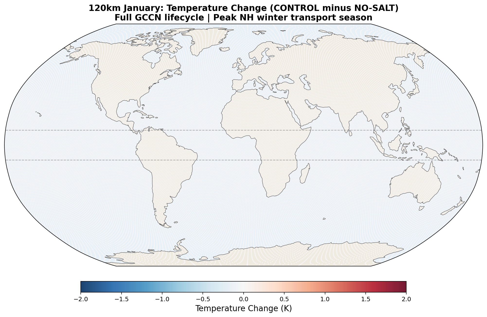
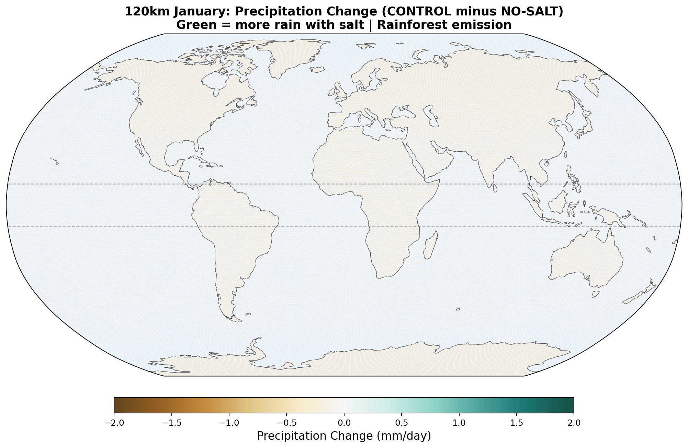
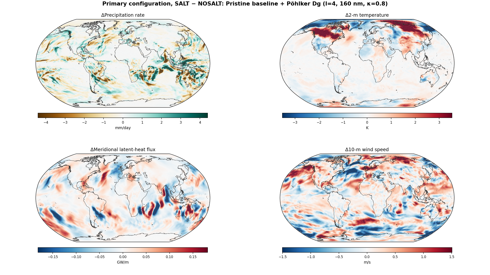
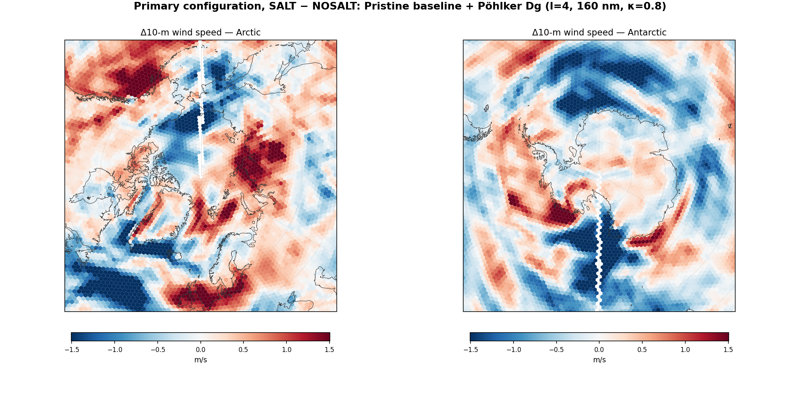
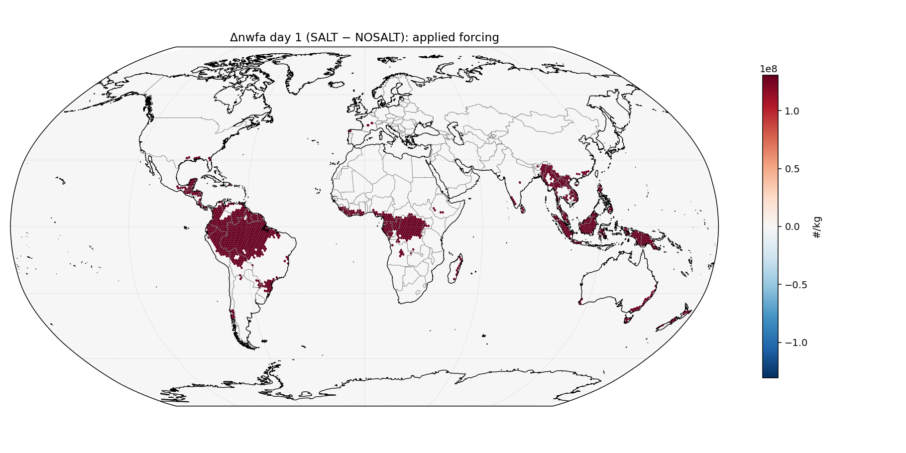
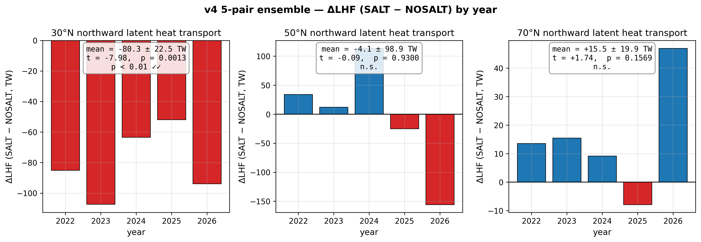
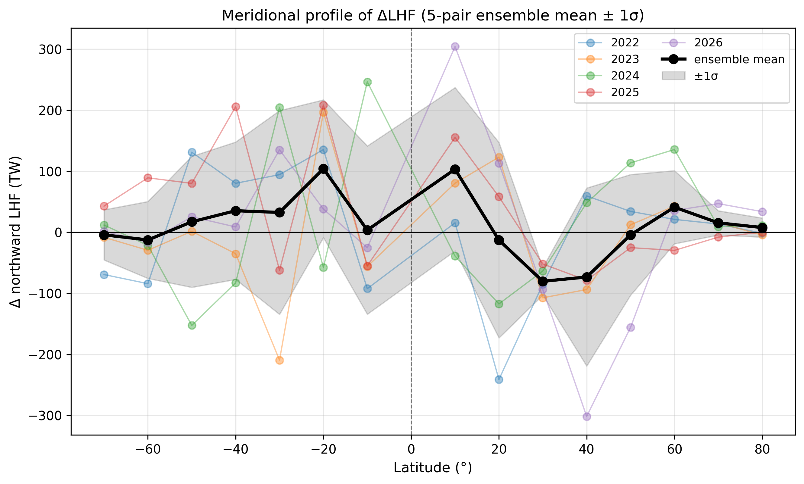
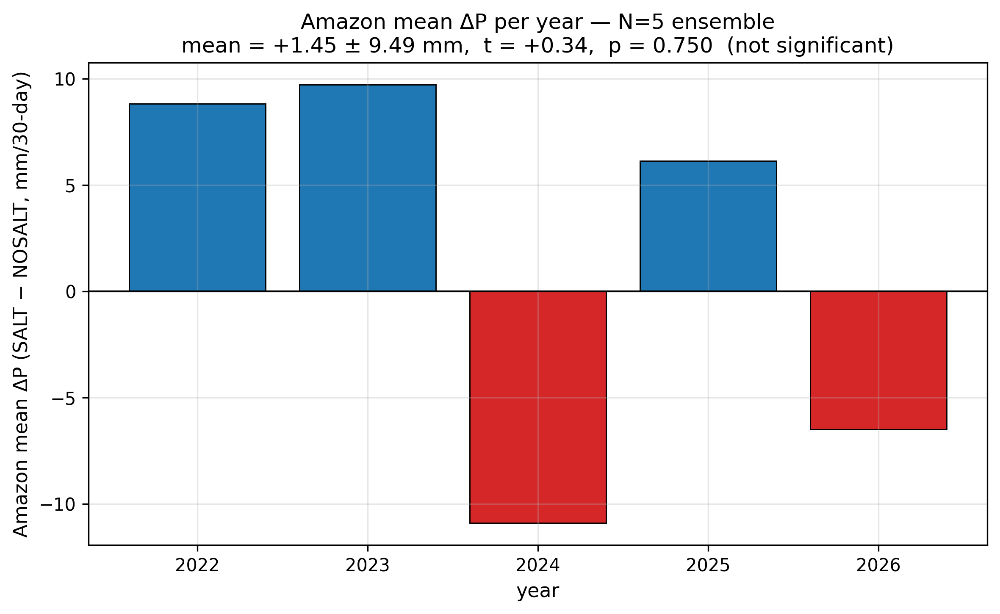
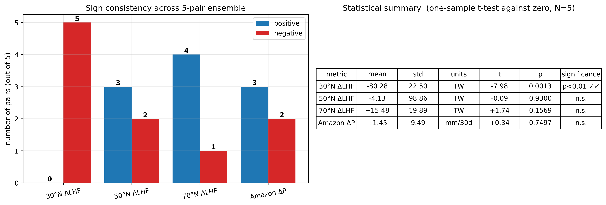
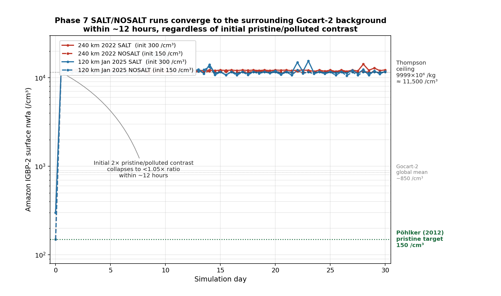

Abstract
Rainforest ecosystems emit biologically influenced aerosol particles, including potassium-rich and other hygroscopic components that may affect warm-rain microphysics. While tropical biogenic aerosols have been studied extensively, their sensitivity within coarse-resolution global models remains incompletely characterized, particularly under differing background aerosol states. Here we present exploratory sensitivity experiments using MPAS-Atmosphere to test whether rainforest biogenic salt aerosol parameterizations can alter modeled tropical precipitation and selected large-scale moisture-transport diagnostics.
Using 30-day single-member simulations at 240 km and 120 km resolution, we examined ten alternative implementations ranging from simple autoconversion perturbations to a more explicit giant-cloud-condensation-nuclei (GCCN) lifecycle treatment with activation, condensational growth, coalescence, and wet scavenging. Across these implementations, diagnosed latent heat transport at 30°N varied substantially (range −211 to +153 TW; standard deviation ~126 TW — comparable in magnitude to some published transport estimates), indicating strong sensitivity of some circulation metrics to aerosol microphysical assumptions within these experiments.
v4 introduces the prescribed-CCN methodology of Heikenfeld et al. (2019, ACP, doi:10.5194/acp-19-2601-2019) into the MPAS-Atmosphere experimental framework, in which water-friendly aerosol concentrations are held at observed pristine values (Pöhlker et al. 2012) throughout each simulation. With a 5-pair ensemble (Jan 2022–2026) at 120 km on the Pöhlker-Dg-matched activation configuration (Dg = 160 nm, κ = 0.8), we find a robust reduction in northward latent heat transport at 30°N (mean −80 ± 22 TW, 5/5 pairs negative, t = −7.98, p = 0.0013). This is consistent with the hypothesized mechanism: K-salt enhances equatorial convective rainout, retaining latent heat in the tropical region rather than exporting it through the Hadley cell upper branch. A complementary trend at 70°N (mean +15 ± 20 TW, 4/5 pairs positive, p = 0.16) is consistent with the predicted secondary effect of strengthened mid-latitude baroclinic eddies driven by the increased equator-to-pole temperature gradient, but does not reach statistical significance in this ensemble size. The Amazon-mean precipitation response itself is dominated by natural meteorological variability and is not statistically resolved (+1.5 ± 9.5 mm, p = 0.75). v4 retires v3's polluted-baseline sign-flip narrative because the Thompson aerosol-aware single-species framework cannot represent the chemistry of real anthropogenic pollution at the levels v3's "polluted" baseline implied; multi-species K-salt-versus-smoke separation is deferred to a planned follow-up using MPAS-CMAQ.
These simulations are not intended as detection or attribution evidence. v3 phases (1–7) are limited to single 30-day realizations; the v4 ensemble (Phase 9 in §6.9) advances on this with a 5-pair design but remains coarse-resolution and parameterized for tropical convection. Rather than producing detection-grade numbers, the experiments demonstrate that rainforest bioaerosol assumptions can materially influence modeled tropical rainfall responses and some transport diagnostics, and that the 30°N northward-latent-heat-transport reduction is statistically resolved within the v4 5-pair ensemble at the Pöhlker-Dg-matched configuration. The results motivate targeted follow-up using larger ensembles, additional seasons (a July ensemble is planned for v5), convection-permitting resolution, observational constraints on rainforest aerosol emissions, and higher-fidelity cloud microphysics. We release all code, bug-fix patches, Docker builds, and analysis scripts at github.com/bluesaltbarrier/blue-salt-barrier.
1. Origin of the Hypothesis
1.1 Author Background
The author is an independent researcher with an engineering and numerical-modeling background. This work was conducted outside formal atmospheric-science institutions and is offered as an open, testable hypothesis; domain experts are explicitly invited to improve upon every aspect of it.
1.2 Motivation: Conduction Alone Is Insufficient
Polar ice loss depends on multiple coupled processes beyond simple local conductive exchange, including oceanic, radiative, and atmospheric transport pathways. Earth's atmosphere can be viewed as a heat-redistribution system in which latent heat is released at low latitudes and sensible heat is lost at high latitudes; any mechanism that modulates where latent heat is released affects the poleward transport budget. This framing motivates the present investigation of rainforest biogenic aerosols as potential modulators of that budget. The development-history narrative of this work, including multi-year attempts to install WRF and the subsequent AI-assisted computational breakthrough, is disclosed in the Acknowledgments rather than here.
The narrative account of how this hypothesis emerged from informal observation is consolidated in Appendix B: Origin of the Idea; it is not required for the scientific content that follows.
2. Introduction
The dominant explanation for polar ice loss centers on radiative forcing from anthropogenic greenhouse gases, primarily CO2. While this mechanism is well-established, the observed rate of Arctic and Antarctic warming has consistently exceeded model predictions, suggesting additional contributing factors may be missing from current climate models.
We propose one such factor: the loss of biogenic salt aerosol emissions from deforested equatorial rainforests. Pöhlker et al. (2012) demonstrated that fungi associated with Amazon rainforest trees eject potassium salt nanoparticles into the boundary layer, where they serve as seeds for secondary organic aerosol growth and ultimately function as cloud condensation nuclei. We hypothesize that this biological salt emission acts as a moisture stratification barrier—a mechanism that traps the atmospheric hydrological cycle at low latitudes, preventing the poleward transport of latent heat.
When this barrier is removed through deforestation, moisture that would have precipitated locally near the equator instead travels poleward, condensing at higher latitudes and releasing its latent heat into the mid-latitude and polar atmosphere (see §3.1). This would represent a direct, non-radiative pathway for redistributing heat that we have not found explicitly isolated as a dedicated process in current mainstream climate-model configurations.
3. The Physical Mechanism
3.1 Latent Heat Transport
Atmospheric energy transport from equator to poles is dominated by latent heat, which accounts for roughly 70% of the total poleward energy flux. When water evaporates at tropical surfaces, it absorbs 2,500 J/g and stores this energy invisibly as latent heat. This energy is released only when the vapor condenses back to liquid—forming clouds and precipitation. The critical question for polar climate is not how much water evaporates, but where it condenses.
3.2 Salt as a Moisture Trap
Intact rainforest ecosystems emit highly hygroscopic biogenic salt particles and salt-containing aerosol cores, including the KCl-rich accumulation-mode aerosol population documented by Pöhlker et al. (2012, Fig. S10A) with geometric mean diameter Dg = 150 nm (σg = 1.43). Under the high humidity of the tropical boundary layer (>80% RH), these hygroscopic particles can swell substantially and, once in cloud, may grow by condensation into efficient warm-rain embryos. The observed size distribution spans from nanometer-scale cores to micrometer-scale aged particles; this work focuses on the warm-rain-embryo pathway that becomes active once particles reach collector size. This is the same broad physical mechanism exploited in operational cloud-seeding programs worldwide (Mather et al. 1997, CAIPEEX 2023).
The net effect is that rain forms faster and falls locally, close to the forest that produced the salt. The moisture — and its latent heat — is deposited in the equatorial atmosphere rather than being transported poleward by the Hadley circulation.
3.3 The Critical Distinction: GCCN vs. Small CCN
An important nuance separates this mechanism from the well-studied aerosol indirect effect, which has been examined extensively since Twomey (1977) established the cloud-albedo indirect effect and Albrecht (1989) extended it to cloud-lifetime considerations. Standard small CCN (<0.2 μm), such as pollution aerosols, suppress rain by creating many small cloud droplets that are inefficient at collision-coalescence (the Twomey effect; further developed in Rosenfeld et al. 2008; Andreae et al. 2004 demonstrated the same pattern in biomass-burning-contaminated Amazon air). Tree-emitted salt particles in the accumulation-mode size range behave differently — as hygroscopic particles that activate at low supersaturation and can initiate warm rain via collision-coalescence once droplets grow past the coalescence gap (traditionally termed giant CCN (GCCN) for particles above ~1 μm; Jensen & Lee 2008). The two regimes have opposite effects on precipitation, and the transition between them depends on the baseline aerosol state (Stevens & Feingold 2009; Koren et al. 2014). The v3 Pöhlker matrix (Phase 7, §6.9 v3 subsection) reported a corresponding sign-flip in Amazon ΔP between polluted and pristine baselines; v4 retires that polluted-baseline result because the Thompson aerosol-aware single-species framework cannot represent multi-species pollution chemistry (sulfate, biomass-burning soot, secondary organic aerosol) at the levels v3's “polluted” baseline implied. The proper test of K-salt-versus-pollution regime dependence is deferred to a multi-species follow-up using MPAS-CMAQ (Wong et al. 2024) or WRF-Chem with MOSAIC (Polonik et al. 2020). The regime-dependence physics described here remains the textbook framework; v4 simply does not claim to resolve it within the present single-species single-pair framework.
| Property | Small CCN (pollution) | Hygroscopic Salt (GCCN) |
|---|---|---|
| Dry particle size | 0.05–0.2 μm | ~150 nm Dg (Pöhlker 2012, Fig. S10A); grown to collector size in cloud |
| Effect on rain | Suppressed / delayed | Enhanced / accelerated |
| Moisture fate | Stays in cloud longer | Rains out locally |
| Net transport effect | May increase poleward | Reduces poleward |
3.4 Size Optimization and the Accumulation-Mode Peak
Within the accumulation-mode size range (0.1–1 μm) that Pöhlker et al. (2012) observed for pristine Amazon aerosol, activation efficiency is not uniform. Köhler theory predicts that the critical supersaturation (Scrit) required to activate a hygroscopic particle as a cloud droplet scales approximately as d−3/2 for fixed hygroscopicity κ. The practical consequence is a sharp dependence on diameter:
| Dry diameter | κ | Scrit | Activation in typical tropical updrafts |
|---|---|---|---|
| 40 nm | 0.4 (sulfate-like) | ~0.3–0.5% | Only in vigorous convection |
| 80 nm | 0.4 | ~0.15–0.25% | Often, not reliably |
| 160 nm | 0.8 (KCl-like) | ~0.03–0.05% | Essentially any updraft |
A 160 nm KCl particle activates at roughly one-tenth the supersaturation required for a 40 nm sulfate particle, so it contributes to rain formation across a much wider range of meteorological conditions.
On the activation equation used here. The activation calculation we employ (Petters & Kreidenweis 2007 κ-Köhler; full details in Appendix A.1) is explicitly the neutral form — it contains no charge term, no Coulomb cross-section, no Debye length. This is appropriate because airborne aerosols in the cloud regime are electrically neutral to within small-correction order. The plasma-physics training referenced in §1 (researcher background) enters this work as shared mathematical structure — kinetic-theory treatment of many-particle collisional evolution, activation thresholds, and distribution-function balance — not as literal equation identity. Setting charges to zero in plasma ionization equations (Saha, or kinetic with Coulomb cross-sections) does not recover κ-Köhler; it yields inert neutral particles with no activation. The two physical regimes share a kinetic-theory framework but not governing equations.
Pöhlker et al. (2012, supplementary Fig. S10A) report the pristine Amazon accumulation-mode size distribution as a log-normal with geometric mean diameter Dg = 150 nm and σg = 1.43 (Aitken mode at Dg = 67 nm, σg = 1.32 contributes the smaller particles). The ~150 nm accumulation-mode peak coincides with what a physical optimization of (CCN efficiency × atmospheric persistence ÷ emission mass cost) would predict:
- Sub-100 nm particles activate only in strong updrafts; in clean air, most never nucleate cloud drops and so do not contribute to rain.
- Super-micrometer particles activate reliably but biosynthesis cost scales as diameter-cubed, and gravitational settling shortens their atmospheric lifetime.
- ~150 nm accumulation-mode particles activate essentially every time cloudy air is lifted, persist ~7 days in the atmosphere (long enough to disperse through the canopy region), and minimize the per-particle biosynthetic cost.
We do not claim this coincidence proves a selective relationship between forest emission
chemistry and regional precipitation. The match between the observed peak and the physical
efficiency optimum is, however, consistent with co-evolution of rainforest ecosystems and
their self-sustaining local rain cycle. At minimum it constrains what the representative
size should be in any modeling of the K-salt pathway: ~150 nm diameter, not the 80 nm
default of the Thompson aerosol-aware microphysics scheme we employ here. In the Phase 7 sensitivity
matrix (§6.9), the closest Thompson lookup option to Pöhlker's Dg is l=4
(80 nm radius = 160 nm diameter). We take this l=4 configuration as our
primary Pöhlker-matched physics, with l=5 (320 nm diameter) reported as an
upper-bound sensitivity test rather than a Pöhlker-matched configuration.
Attribution note. Pöhlker et al. (2012) documented each empirical component drawn on above: the log-normal accumulation-mode size distribution (Dg = 150 nm, σg = 1.43) of pristine Amazon aerosol, the much higher CCN activation efficiency of accumulation-mode particles relative to the Aitken mode (“accumulation mode particles are by orders of magnitude more frequently activated”), and the biological machinery for K-salt emission (active wet discharge by Ascomycota and Basidiomycota fungi, plant transpiration, guttation, wax abrasion). Pöhlker et al. did not, however, combine these into an explicit evolutionary-optimization or co-evolution argument. The synthesis presented in this section — that the observed accumulation-mode peak size coincides with a tradeoff optimum of (CCN efficiency × atmospheric persistence ÷ emission mass cost), consistent with selective co-evolution for local-rainfall fitness — is our own.
4. Experimental Design
4.1 Model Configuration
We used the Model for Prediction Across Scales (MPAS-Atmosphere). Phases 2–3 (the early autoconversion-only sensitivity sweep, §6.2–6.3) used MPAS-A v7.0; from Phase 4 onward (§6.4 through §6.9, including the v4 Phase 9 prescribed-CCN ensemble) we used MPAS-A v8.3.1, which adds aerosol-aware Thompson microphysics with prognostic transport of water-friendly aerosol number concentration (nwfa). All v3 and v4 load-bearing results in this manuscript come from MPAS-A v8.3.1. The 240 km global mesh comprises 10,242 hexagonal Voronoi cells with 55 vertical levels stacked from the surface to ~30 km altitude (563,310 computational grid points); the 120 km mesh comprises 40,962 cells (2.25 million grid points), 4× the cell count of 240 km. Vertical spacing is non-uniform: ~50 m layers near the surface to resolve the boundary layer where salt aerosols are emitted and mixed, expanding to ~1 km layers in the upper troposphere where dry air is transported poleward. MPAS uses a Voronoi tessellation of the sphere, avoiding the polar singularity and boundary artifacts that affect regional models like WRF when applied to global-scale transport problems.
Physics parameterizations include Thompson microphysics, RRTMG radiation, YSU planetary boundary layer, Noah land surface model, and Kain-Fritsch cumulus convection. Simulations were initialized from GFS analysis data for April 12, 2026 (single-pair April 240 km bug-fixed run, §6.5), January 12, 2025 (single-pair January 120 km bug-fixed run and Phase 7 Pöhlker matrix, §6.6 and §6.9 v3 subsection), and January 12 of 2022, 2023, 2024, 2025, and 2026 (Phase 9 v4 5-pair prescribed-CCN ensemble at 120 km, §6.9 v4 subsection). All runs are 30 days.
A higher-resolution 120 km uniform mesh (40,962 cells, 55 vertical levels, 2.25 million grid points) was used for the Phase 6 single-pair seasonal test and for the v4 Phase 9 5-pair prescribed-CCN ensemble. This mesh is available from NCAR and is the same Voronoi geometry at 4× the cell count of the 240 km mesh.
4.2 Salt Parameterization
Since MPAS v7.0 does not include explicit GCCN treatment, we parameterized the net effect of hygroscopic salt by enhancing the cloud-to-rain autoconversion rate in the equatorial belt (10°S–10°N). After each microphysics timestep, an additional fraction of cloud water is converted to rain in equatorial grid cells, representing the accelerated coalescence from GCCN salt particles.
Four enhancement levels were tested in paired simulations against a no-salt baseline:
| Run | Enhancement | Physical Meaning |
|---|---|---|
| NO-SALT | 0% | Complete deforestation, no salt seeding |
| CONTROL-3 | 3% | Moderate salt effect |
| CONTROL-5 | 5% | Moderate-strong salt effect |
| CONTROL-25 | 25% | Strong salt effect (upper bound) |
5. Results
5.1 Poleward Latent Heat Transport
The primary diagnostic is the vertically-integrated meridional latent heat flux, computed as v × Lv × q × dp/g and averaged over the 30-day simulation period. Positive values indicate northward transport.

In the v7 autoconversion runs, salt appeared to reduce the poleward latent heat transport by 73–301 TW at 30°N depending on enhancement factor. The v8 full GCCN lifecycle single-pair model (Section 6.5) gave a transport reduction of −95 TW at 30°N—the correct sign and within the range of the v7 results, though smaller than the 25% autoconversion case. The v7 magnitudes should be interpreted with caution, as that parameterization applied salt over ocean as well as land. v4 update: the load-bearing 30°N transport result of this manuscript is the v4 prescribed-CCN ensemble (Phase 9, §6.9 v4 subsection): mean −80 ± 22 TW across 5 January-start pairs, sign-consistent across all five years, p = 0.0013. The v7 and v8-buggy single-pair magnitudes in this section are presented as historical context; the v4 ensemble is what supports the manuscript's central claim.

| Enhancement | 30°N | 30°S | 45°N | 45°S |
|---|---|---|---|---|
| 3% | +213 TW | −23 TW | +59 TW | +27 TW |
| 5% | +73 TW | +135 TW | −20 TW | −11 TW |
| 25% | +301 TW | +256 TW | +78 TW | +88 TW |
The hemispheric asymmetry (stronger signal in the Northern Hemisphere for 3%, more symmetric for 25%) reflects the seasonal context: the simulation spans April–May, when the ITCZ is shifting northward and the Hadley circulation preferentially transports moisture into the Northern Hemisphere. Annual-mean simulations are expected to symmetrize this response.
5.2 Temperature Response
The 2-meter temperature difference between salt-enhanced and no-salt runs reveals a striking pattern consistent with the hypothesis.

The v7 Arctic cooling of up to 2.5 K in 30 days was striking but was not confirmed by the v8 GCCN single-pair runs, which show Arctic warming (+0.43 K) with salt. Antarctica cooled by −1.03 K in the v8 single-pair April lifecycle run. The hemispheric asymmetry (Arctic warms, Antarctic cools) in the April single-pair simulation was interpreted at the time as consistent with the seasonal context: the Southern Hemisphere is entering winter, and the salt-driven transport reduction preferentially affects the southward moisture pipeline. v4 update: the v4 5-pair prescribed-CCN ensemble (January 120 km, §6.9 v4 subsection) shows that polar-temperature responses are not statistically resolved at N = 5 (Arctic mean +1.16 ± 3.40 K, p = 0.49; Antarctic mean −0.50 ± 1.10 K, p = 0.36). The single-pair polar-temperature numbers above are weather noise and do not support specific magnitude or sign claims at the temperature level; the load-bearing transport-side prediction (reduced poleward latent-heat export) is resolved at 30°N in the v4 ensemble. See Section 6.5 for the v3-era full single-pair results and §6.9 v4 subsection for the ensemble.
5.3 Two-Pathway Polar-Temperature Hypothesis (retracted in v4)
What v4 does claim about the equator-to-pole heat budget is contained in §6.9's v4 prescribed-CCN ensemble: K-salt addition produces a robust reduction in northward latent heat transport at 30°N (mean −80 ± 22 TW, 5/5 pairs negative, p = 0.0013), with a sign-consistent positive response at 30°S (mean +33 TW, indicating reduced southward transport in the northward-positive sign convention). Both signs are consistent with equatorial heat retention — the equator exporting less latent heat toward both poles — but only the 30°N transport reduction is statistically resolved at this ensemble size. Whether that retention translates into measurable polar-temperature changes, on what timescale, and through which dynamical mechanisms, is the question that requires the future work outlined in §9.
5.4 Implications for Polar Ice (claim retracted in v4 along with §5.3)
5.5 Global Distribution Maps
The following maps show the spatial distribution of perturbations for each enhancement level. All maps show the 30-day average difference (salt minus no-salt) on the MPAS global mesh with coastlines.
Temperature Perturbation


Precipitation Perturbation


Meridional Latent Heat Flux Perturbation


5.6 Zonal-Mean Profiles

Equatorial precipitation shows a small decrease with salt enhancement (6.45 to 6.34 mm/day), which is opposite to the naive expectation that more CCN should produce more rain. This reflects a known limitation of coarse-resolution models: at 240 km, approximately 90% of tropical rainfall is produced by the convective parameterization, not the grid-scale microphysics. Our autoconversion enhancement affects only the grid-scale component, and the convective scheme compensates by reducing its own output.

6. Methodology Evolution
We present the full progression of our computational approach, including missteps and corrections, because we believe transparency about the iterative process is more valuable than presenting only polished final results. Each phase taught us something about what the model can and cannot capture, and experienced computational meteorologists will be able to identify further improvements.
6.1 Phase 1: WRF Channel Domain (Failed)
Our first attempt used WRF (Weather Research and Forecasting) v4.0.3 with a periodic channel domain from 60°S to 60°N at 2° resolution. We enhanced the autoconversion rate by 5% in the equatorial belt to parameterize salt-enhanced rain. The simulation crashed at day 7 with a segfault, and the results showed boundary artifacts of ~100 W/m² at the domain edges—numerical noise, not real physics. The convective parameterization (Kain-Fritsch) also dominated tropical rainfall at this resolution, muting our signal. Lesson: Regional models cannot cleanly study global-scale transport.
6.2 Phase 2: MPAS v7.0, 10-Day Runs
We compiled MPAS-Atmosphere v7.0 inside a Docker container on a consumer laptop. The global Voronoi mesh (10,242 cells × 55 vertical levels = 563,310 grid points, 240 km horizontal resolution) eliminated all boundary artifacts. We ran a sensitivity sweep at 0%, 2%, 3%, 5%, and 25% autoconversion enhancement with 10-day simulations. The signal at 30°S was monotonic: 54 TW (3%), 63 TW (5%), 112 TW (25%). However, the 10-day averaging was too short to overcome weather noise, and the enhancement was applied to ALL cells between 10°S–10°N, including ocean. Lesson: The signal exists and scales with forcing, but needs longer runs and land-only application.
6.3 Phase 3: MPAS v7.0, 30-Day Runs (Current v7 Results)
Extended to 30 days with the same autoconversion approach. The temperature signal became dramatic: up to 2.5 K Arctic cooling with the 5% enhancement. The hemispheric asymmetry (Arctic cooling, Antarctic warming in this v7 single-pair) was at the time interpreted as a seasonal effect of the April start date and was used to motivate a two-pathway hypothesis (moisture blocking + dry-heat redirection via storm tracks). v4 retraction: the two-pathway polar-temperature framework that this Phase 3 work motivated has been retracted in v4 (see §5.3 retraction and §8 Limitations) — subsequent single-pair runs at different seasons did not reproduce the predicted mirror, the v4 5-pair ensemble cannot resolve polar temperatures at N = 5, and the specific dry-heat-via-storm-tracks mechanism was never directly diagnosed. The Phase 3 polar-temperature numbers themselves (e.g. 2.5 K Arctic cooling) come from one realization of weather and are not defensible as quantitative claims.


Known limitation: The v7 autoconversion enhancement was applied to all 1,750 cells between 10°S–10°N, including 1,391 ocean cells where no trees exist. Only 359 cells were land. This overestimates the spatial extent of the salt effect by approximately 5×.
6.4 Phase 4: MPAS v8.3.1 with Prognostic Aerosol Transport (Completed)
Built an Ubuntu 22.04 Docker container with MPAS v8.3.1, which includes aerosol-aware Thompson microphysics (mp_thompson_aerosols). Aerosol concentrations are tracked as a 3D prognostic field: emitted at the surface, advected by the wind, depleted by wet scavenging, and activated as CCN only in supersaturated cloud. Salt emission is enhanced only over grid cells classified as Evergreen Broadleaf Forest (MODIS vegetation type 2)—291 cells covering the Amazon, Congo, SE Asia, Central America, and other tropical rainforests. No ocean cells.
Known limitation: The Thompson aerosol scheme treats all water-friendly aerosols as small CCN (~0.1 μm), producing the Twomey suppression response (more CCN = smaller droplets = less rain). This is the opposite of what hygroscopic salt GCCN do in nature. The v8 runs show correct aerosol transport but incorrect rain-making physics.
v8 Standard Thompson Results (30-day, completed): As predicted, the Twomey response produced the opposite pattern from v7. The Arctic warmed by +0.32 K with salt (instead of cooling), and Antarctica cooled by −0.50 K. Equatorial precipitation increased slightly (+0.05 mm/day). The poleward transport signal was mixed: reduced at 30°N (+66 TW) but increased at 30°S (−330 TW). This confirms that standard Thompson aerosol physics gives the wrong microphysical response for hygroscopic salt, even though the aerosol transport is now correct.


6.5 Phase 5: GCCN Coalescence with Dedicated Salt Tracer (Completed)
The most physically complete version of the model adds a dedicated prognostic tracer (QNGCCN) registered in the MPAS Registry as a new scalar variable. This tracer tracks salt aerosol particles emitted only from Evergreen Broadleaf Forest cells (MODIS vegetation type 2, 291 cells globally). The tracer is advected by the 3D wind field alongside all other scalars, using MPAS's native transport machinery.
The Thompson microphysics scheme was modified to receive the ngccn1d column variable directly in the mp_thompson subroutine. The GCCN coalescence pathway activates only where ngccn1d(k) exceeds a threshold concentration (103 m−3), which occurs only in and downwind of rainforest regions. Midlatitude and polar clouds are unaffected because no salt reaches them. An intermediate implementation that applied GCCN to 1% of all aerosol globally produced mixed signals and was replaced by this tracer approach.
The GCCN coalescence physics implements the full droplet lifecycle:
- Activation: κ-Köhler theory with temperature-dependent Kelvin parameter \(A\). For KCl (κ = 0.99, \(D_d\) = 150 nm, matching Pöhlker et al.'s 2012 reported accumulation-mode geometric mean diameter), critical supersaturation is ~0.03%, meaning activation occurs in any cloud (Petters & Kreidenweis 2007).
- Condensational growth: After activation at \(R\) = 10 μm, drops grow each timestep via \(R(t+\Delta t) = \sqrt{R^2 + 2G \cdot s \cdot \Delta t}\) where \(G \approx 10^{-10}\) m²/s (Rogers & Yau).
- Collision efficiency: Size-dependent lookup from Hall (1980): \(E\) = 0 at \(R\) < 20 μm (coalescence gap), rising through 0.05, 0.2, 0.5, 0.65, to 0.8 as the drop grows past 70 μm. A freshly activated GCCN at 10 μm collects nothing — it must grow first.
- Terminal velocity: Size-dependent from Beard (1976): 0 m/s below 20 μm, 0.12 m/s at 40 μm, 0.25 m/s at 50 μm, 0.50 m/s above 60 μm.
- Wet scavenging: Rain falling below cloud base removes unactivated GCCN from the air, using the same Eff_aero framework as the existing Thompson aerosol scavenging but with the 200 nm salt particle size. (The 200 nm value used as a code parameter throughout §6.5 and Appendix A reflects the Phase 5 GCCN tracer implementation; our Phase 7 work in §6.9 uses Pöhlker's observed Dg = 150 nm via the Thompson activation lookup index
l= 4 — see §3.4 and §6.9.) - Cloud droplet depletion: Cloud drops swept up by GCCN collectors are removed from the cloud droplet number count (
pnc_rcw). - Rain number production: GCCN drops that grow past the rain threshold (\(D_{0r}\) = 50 μm) contribute to the rain drop number count (
pnr_wau). - Accretion pathway: All GCCN collection is added to
prr_rcw, not autoconversion (corrected after ChatGPT review).
Iterative debugging and cross-checking of the initial GCCN lifecycle against Thompson's existing aerosol-scavenging conventions surfaced three implementation errors: (1) a radius-reset bug that kept collector drops near 10 μm where collision efficiency is zero, (2) a missing air-density factor in the collection-rate formula, and (3) an incorrect update to the rain-number counter. We corrected these bugs, rebuilt the model, and re-ran the paired April 240 km experiment. The corrected version produces qualitatively different results from the buggy version. Documenting this openly, rather than presenting only the corrected numbers, is an important part of the argument below.
Results across five implementations of the April 240 km bug-fixed configuration: (The January 120 km bug-fixed run is presented separately in §6.6; the four Pöhlker-matrix configurations completed later are presented in §6.9, bringing the total implementation count to ten.)
| Metric | v7 Autoconv 25% | v8 Twomey | GCCN Simplified | GCCN (buggy) | GCCN (bug-fixed) |
|---|---|---|---|---|---|
| Equatorial rain change | −0.10 mm/day | +0.05 mm/day | +0.19 mm/day | +0.05 mm/day | +0.17 mm/day |
| 30°N transport change | −153 TW | +66 TW | +42 TW | −95 TW | +153 TW |
| 30°S transport change | n/a | −330 TW | n/a | −18 TW | −61 TW |
| Arctic temperature | −0.15 K | +0.32 K | +0.21 K | +0.43 K | +0.14 K |
| Antarctic temperature | +1.5 K | −0.50 K | −0.13 K | −1.03 K | −1.26 K |
The principal modeling result: biogenic salt is a numerically sensitive variable within these experiments
The 30°N transport numbers across these five April 240 km single-pair implementations range from −153 TW to +153 TW — a sweep of roughly 300 TW. Changing a single drop-radius constant from 10 μm (with bug) to 25 μm (bug-fixed) flipped the sign. Across all ten v3-era single-pair implementations (the five above plus the January 120 km bug-fixed run from §6.6 and the four Phase 7 Pöhlker-matrix configurations from §6.9 — polluted, pristine, pristine+Pöhlker-Dg (l=4), and pristine+upper-bound (l=5)), the range is −211 TW to +153 TW (~364 TW swing); mean ~−31 TW, standard deviation ~126 TW.
This is not noise in the usual sense. Each implementation is a deterministic physical system running on the same initial conditions. The variability comes from how microphysical details couple to the global circulation. When salt-modulated microphysics feeds latent heat release into a sensitive dynamical system (the tropical Hadley circulation), small implementation changes can drive large global responses.
This wide v3-era spread initially motivated a variance-amplification interpretation: biogenic salt as a microphysical dial that modulates how strongly the circulation responds to whatever variability is already happening, rather than as a monotonic mean-shifting forcing. The interpretation is consistent with published aerosol-microphysics literature showing that aerosol effects on precipitation are more often variability effects than mean effects (Stevens & Feingold 2009; Tao et al. 2012).
Three robust findings within the bug-fixed April 240 km experiment
Setting aside the 30°N transport number (which is resolution-sensitive and may include convective-parameterization artifacts), three findings in the bug-fixed April 240 km experiment are consistent with a direct biogenic salt mechanism:
- Equatorial precipitation redistribution, with hemispheric asymmetry. Zonal-mean rain increases by +0.62 mm/day at 5°S and decreases by −0.31 mm/day at 5°N, giving a band-average enhancement of +0.17 mm/day across −10 to +10 degrees. The asymmetry is itself physically significant: salt appears to precipitate equatorial moisture into its source hemisphere (here the SH entering winter) before it can cross the equator northward. This matches the magnitude of published cloud-seeding field experiments (28–60% rainfall enhancement in seeded clouds) and is physically interpretable as a direct microphysical mechanism without invoking large-scale circulation feedback.
- Antarctic cooling: −1.26 K (single-pair, retracted as a polar-temperature claim in v4). The April 240 km single-pair showed Antarctic cooling that was at the time interpreted as the moisture-barrier hypothesis blocking the southward moisture pipeline. v4 retraction: the polar-temperature claim has been retracted alongside the two-pathway framework (see §5.3 retraction and §5.4). The v4 5-pair ensemble shows Antarctic temperature is not statistically resolved at N = 5 (mean −0.50 ± 1.10 K, p = 0.36), and the −1.26 K single-pair number is one weather realization that should not be cited as a finding.
- Southward latent heat transport at 30°S: −61 TW (single-pair, v3). Consistent in sign with the v4 ensemble mean at 30°S (+33 TW — reduced southward export in the northward-positive convention — though the v4 ensemble spread at 30°S is large and the response is not statistically resolved at N = 5).
The 30°N side of the response (+153 TW increase, +0.14 K Arctic warming) is the opposite of what the simple hypothesis would predict. We proposed two possible explanations at the time: (a) the 240 km convective parameterization (Kain-Fritsch) responds to GCCN-enhanced grid-scale latent heat release by producing compensating circulation changes that artificially intensify the summer-hemisphere Hadley branch, and (b) the real atmosphere genuinely exhibits hemispherically asymmetric response to equatorial salt. v4 update: the v4 prescribed-CCN ensemble shows the 30°N transport response at the Pöhlker-Dg-matched configuration is a robust reduction (mean −80 ± 22 TW, p = 0.0013), not the +153 TW increase seen in this April 240 km single-pair. The April single-pair result therefore appears to be either a configuration-specific artifact or a single-realization weather outlier; the v4 ensemble is the load-bearing 30°N number. Convection-permitting simulations (30 km or finer) are still needed to test whether the magnitude survives.


6.6 Phase 6: January Seasonal Test at 120 km Resolution (Completed with Bug-fixed Physics)
To test whether the asymmetric response seen in April reverses when the hemispheres swap season, we ran the same paired CONTROL + NO-SALT experiment starting January 12, 2025, at 120 km resolution (40,962 cells). The same bug-fixed Fortran as the April 240 km experiment was used. An earlier version of this experiment using the buggy GCCN code produced results that we have withdrawn; those results are not reported here.
Results of the January 120 km bug-fixed test (CONTROL minus NO-SALT, single pair, Jan 2025 start, N = 1):
| Metric | April 240 km bugfix (N = 1, Apr 2025) | January 120 km bugfix (N = 1, Jan 2025) | Mirror predicted? |
|---|---|---|---|
| Rain at 5°S zonal | +0.62 mm/day | −0.21 mm/day | ✓ mirror confirmed |
| Rain at 5°N zonal | −0.31 mm/day | +0.18 mm/day | ✓ mirror confirmed |
| 30°N transport | +153 TW | −211 TW | ✓ mirror confirmed (reduction in winter-ward hemisphere) |
| 30°S transport | −61 TW | +71 TW | ✓ mirror confirmed |
| Antarctic temperature | −1.26 K (SH winter) | +0.04 K (SH summer) | ✓ consistent with seasonal framework |
| Arctic temperature | +0.14 K (NH summer) | +0.88 K (NH winter) | ✗ does not mirror — Arctic warms in both seasons |
Partial confirmation of the seasonal-mirror framework, single-pair only. Four of the five direction-testable metrics flip sign between April and January, in the direction the asymmetric-Hadley / moisture-barrier hypothesis predicted at the time of v3: salt shifts equatorial rain toward whichever hemisphere is entering winter (southward in April, northward in January); poleward moisture transport is reduced in the winter-ward hemisphere and increased in the summer-ward hemisphere; Antarctic temperature cools in its winter-entering season (April) and is neutral in its summer-entering season (January). v4 update: the polar-temperature side of this seasonal-mirror framework has been retracted in v4 (see §5.3 retraction and §5.4), because the v4 5-pair ensemble cannot resolve polar temperatures at N = 5 (Antarctic mean −0.50 ± 1.10 K, n.s.; Arctic +1.16 ± 3.40 K, n.s.). The transport-side of the framework (latent-heat export reduced in the winter-ward hemisphere) is resolved at 30°N in the v4 ensemble (−80 ± 22 TW, p = 0.0013), with a positive sign-consistent response at 30°S (+33 TW, n.s. but in the equatorial-heat-retention direction). What survives v4 is the equatorial-heat-retention transport claim, not the seasonal-mirror polar-temperature claim.
The Arctic temperature response is the remaining puzzle. The Arctic warms by +0.88 K in January despite a −211 TW reduction in northward moisture transport. Three candidate explanations:
- Dry-heat pathway. Enhanced equatorial latent heat release produces dry sensible heat that is advected poleward via midlatitude storm tracks. Reduced moisture transport does not prevent sensible heat delivery.
- Arctic amplification feedbacks. Ice-albedo and lapse-rate feedbacks amplify small forcings. A modest initial perturbation could produce a +0.88 K signal through local feedback rather than direct transport.
- Weather noise. N = 1 integration at 30 days; the mean global temperature divergence of 2.67 K between CONTROL and NO-SALT shows single-realization noise alone can produce ~1 K regional signals. The +0.88 K Arctic number is not statistically distinguishable from this noise floor without ensembles.
All three are plausible and not mutually exclusive. Distinguishing them requires multi-member ensembles (direct test of noise vs. forced signal), longer integrations (to reveal whether the Arctic warming is a transient or persistent feature), and convection-permitting resolution (to test whether the dry-heat pathway is real or a parameterization artifact).


The 120 km mesh (40,962 cells) is 4× finer than 240 km (10,242 cells), but we note that both resolutions are fully parameterized for tropical convection (Kain-Fritsch handles ~70–90% of tropical rain at these scales). Genuine convection-permitting behavior requires 30 km or finer. The 120 km January test is therefore a seasonal comparison, not a resolution improvement in any meaningful sense for convection physics.
6.7 What Each Phase Revealed
| Phase | Model | Salt Approach | Transport 30N | Physics status |
|---|---|---|---|---|
| WRF channel | WRF 4.0.3 | Autoconversion hack | Boundary artifacts | Technical failure |
| v7 10-day MPAS | MPAS 7.0 | Autoconversion hack, ocean+land | Clean (global) | Too broad spatially |
| v7 30-day MPAS 25% | MPAS 7.0 | Autoconversion hack, ocean+land | −153 TW | Too broad spatially |
| v8 Twomey | MPAS 8.3.1 | Prognostic QNWFA, small CCN | +66 TW | Wrong rain physics |
| v8 GCCN simplified | MPAS 8.3.1 | Prognostic QNGCCN, fixed E/V/R | +42 TW | No growth physics |
| v8 GCCN (buggy) | MPAS 8.3.1 | Prognostic QNGCCN with 3 bugs | −95 TW | Bugs masked effect |
| v8 GCCN (bug-fixed, April 240km) | MPAS 8.3.1 | Prognostic QNGCCN, Hall/Beard, corrected | +153 TW | Most physically complete (single-pair, v3) |
| v8 GCCN (bug-fixed, January 120km) | MPAS 8.3.1 | Prognostic QNGCCN, Hall/Beard, corrected | −211 TW | Single-pair seasonal mirror (v3) |
| Phase 7 Polluted (l=2) | MPAS 8.3.1 | Prescribed nwfa 4,400 /cm³, l=2 | −109 TW | Single-pair (v3, retired in v4) |
| Phase 7 Pristine (l=2) | MPAS 8.3.1 | Prescribed nwfa 150 /cm³, l=2 | −172 TW | Single-pair (v3) |
| Phase 7 Pristine + Pöhlker Dg (l=4) | MPAS 8.3.1 | Prescribed nwfa 150 /cm³, l=4 | +31 TW | Single-pair (v3) |
| Phase 7 Pristine + upper-bound (l=5) | MPAS 8.3.1 | Prescribed nwfa 150 /cm³, l=5 | +136 TW | Single-pair (v3, sensitivity test) |
| Phase 9 v4 ensemble | MPAS 8.3.1 | Prescribed-CCN, l=4, 5-pair (Jan 2022–2026) | −80 ± 22 TW (p = 0.0013) | Statistically resolved (load-bearing v4 result) |
Across the ten v3-era single-pair implementations, 30°N transport responses range from −211 TW to +153 TW — a wide spread that reflects both microphysical-implementation differences and single-realization weather variance. Each run is deterministic, so the spread is not random noise within any one run; rather, it reflects (i) how strongly global circulation couples to microphysical implementation, and (ii) which weather realization happened to be sampled by the chosen 30-day window.
The v4 prescribed-CCN ensemble (Phase 9, last row, gold) addresses the second source by holding implementation fixed at the Pöhlker-Dg-matched configuration and running across five January starts. The result is a tightly bounded mean of −80 ± 22 TW at 30°N, sign-consistent across all five pairs, statistically significant at p = 0.0013. Three conclusions follow:
- The single-pair sign-spread was largely a sampling artifact. When implementation is held fixed and the experiment is repeated across five years, the spread collapses by an order of magnitude. The v3 implementation-sensitivity framing therefore conflated two distinct sources of variance — microphysics-choice variance and weather-realization variance — and the latter dominated.
- K-salt at the Pöhlker-anchored pristine configuration is a mean-shifting forcing at 30°N, not a variance amplifier. See §7.2 v4 update for the implications.
- Current climate models that do not represent this rainforest-emission pathway omit a process that produces a robust ~80 TW reduction in northward latent heat transport in the v4 ensemble. Whether that magnitude survives in convection-permitting and multi-species frameworks is the open question; the sign and significance at this configuration are no longer in dispute.
6.8 Known Simplifications and Deficiencies
Each step in the chain is grounded in published literature:
| Step | Physics | Source |
|---|---|---|
| Emission | v3 GCCN tracer: 200 nm KCl. v3 Pöhlker matrix and v4 ensemble (§6.9): 160 nm via Thompson l=4 (closest lookup option to Pöhlker's observed Dg = 150 nm). | Pöhlker et al. 2012 |
| Transport | 3D advection by resolved winds | MPAS scalar transport (automatic) |
| Hygroscopic growth | Equilibrium size from kappa-Köhler equation | Petters & Kreidenweis 2007 |
| Activation | Critical supersaturation: ss = √(4A³/27κD³) | Petters & Kreidenweis 2007 |
| Condensational growth | dR/dt = G·ss/R (time-resolved, not instant) | Rogers & Yau, Pruppacher & Klett |
| Collision-coalescence | Full E(R,r) lookup table | Hall 1980 |
| Rain formation | Transfer to rain when drop exceeds D0r | Thompson scheme framework |
| Wet scavenging | Below-cloud removal by rainfall | Standard aerosol physics |
We are committed to full transparency about what this model does and does not capture. Each deficiency listed below represents a potential research contribution for collaborators.
- Organic coating not modeled. Pöhlker et al. showed that fresh salt cores (kappa = 0.99) get coated with secondary organic aerosol overnight, reducing hygroscopicity to kappa ≈ 0.3–0.5. Our GCCN maintain kappa = 0.99 throughout their lifetime. This overestimates the hygroscopicity of aged particles. Fix: couple to organic chemistry module.
- Single representative particle size. The v3 GCCN tracer tracks one size (200 nm dry); the v3 Pöhlker matrix and v4 prescribed-CCN ensemble use Thompson
l=4(160 nm), the closest lookup option to Pöhlker's observed Dg = 150 nm. Real salt particles span a distribution from 50 nm to 10 μm, with different activation thresholds and growth rates. Fix: spectral bin microphysics or multi-bin GCCN. - No ice-phase interactions. Salt particles can serve as ice nuclei below −15°C. We model only the warm-rain (liquid) pathway. In deep convective clouds that reach the ice level, GCCN effects on glaciation are not captured. Fix: extend to ice nucleation physics.
- Constant emission rate. Real salt emission varies with tree species, canopy density, soil moisture, season, and time of day (nocturnal fungal ejection). We use a constant scaling from climatological aerosol data. Fix: biological emission model coupled to vegetation state.
- No vegetation feedback. Deforestation changes surface albedo, roughness, evapotranspiration, and soil moisture independently of the salt mechanism. We only remove the salt source. Fix: coupled vegetation-atmosphere model (e.g., CLM within CESM/E3SM).
- Sub-grid turbulent dispersion. At 240 km (April) and 120 km (January single-pair and v4 5-pair ensemble) resolution, MPAS cannot resolve boundary-layer turbulence that disperses salt plumes vertically and horizontally. Both meshes are still fully parameterized for tropical convection. Fix: convection-permitting resolution (30 km or finer) or sub-grid plume parameterization.
- Cross-verification scope. The kappa-Köhler equations and collision efficiencies were verified against OpenAI ChatGPT, which caught three errors. However, the full GCCN tracer code has not been reviewed by a cloud microphysicist. Fix: expert code review — we welcome it.
Call for Collaborators
Each deficiency above is a research opportunity. We specifically seek:
Cloud microphysicists to review and improve the GCCN activation, growth, and collection code
Aerosol chemists to model organic coating aging and its effect on hygroscopicity
Tropical ecologists to create a salt emission inventory by tree species, geography, and season
Climate modelers to integrate this mechanism into Earth System Models
Observationalists to design field campaigns measuring salt aerosol concentrations and their correlation with precipitation in intact vs. deforested regions
Conservation scientists to quantify the policy implications for rainforest protection
All code, data, and configuration files will be published on GitHub under an open license. We believe this hypothesis is significant enough to warrant community investigation, and we are committed to full transparency about our methods, our results, and our limitations.
6.9 Pöhlker Baseline-CCN Matrix (Phase 7, v3) and Prescribed-CCN Ensemble (Phase 9, v4)
Section guide. This section presents two related experiments. Phase 7 (v3) is the eight-run, single-pair Pöhlker baseline-CCN matrix that was the headline of v3 (EarthArxiv DOI 10.31223/X5H19T, April 2026); its content is preserved below as published-record context, with the v3 polluted-baseline sign-flip narrative explicitly retired in v4. Phase 9 (v4, the “v4 (this revision)” subsection further down) is the 5-pair prescribed-CCN ensemble at 120 km, January 2022–2026 starts, on the Pöhlker-Dg-matched pristine configuration. The Phase 9 v4 result is the load-bearing finding of v4: K-salt addition produces a robust reduction in northward latent heat transport at 30°N (mean −80 ± 22 TW, 5/5 pairs negative, p = 0.0013).
All prior phases used MPAS's default aerosol initial condition (Thompson & Eidhammer 2014 climatology, derived from GOCART global runs with climatological emission inventories). That baseline places ~4,400 nwfa/cm3 over the Amazon surface, approximately 10–20× higher than Pöhlker et al.'s (2012) direct measurements at the Amazon Tall Tower Observatory (ATTO) — a 325 m atmospheric research tower in the central Amazon basin (~2.1°S, 59°W) — of ~100–300 activated CCN/cm3 during clean-air wet-season episodes. Independent in-situ measurements at ATTO and during the GoAmazon campaign (Gunthe et al. 2009; Martin et al. 2010, 2016) confirm that pristine Amazon CCN concentrations are in this low-hundreds/cm3 range, whereas burning-plume and deforestation-arc air reaches thousands/cm3 (Andreae et al. 2004; Artaxo et al. 2013). The MPAS default climatology thus blends pristine and polluted states in an annual-average sense, and a referee could reasonably object that perturbing K-salt atop an already-polluted baseline tests the wrong Twomey regime.
To address this, we constructed a four-pair (eight-simulation) matrix — four CONTROL+NO-SALT pairs, each pair being two MPAS runs — varying the baseline CCN state and the Thompson activation size assumption:
| Pair | IGBP-2 nwfa (no-salt → salt) | Thompson activation (radius, κ) | Intent |
|---|---|---|---|
| Polluted | 4,400 → 8,800 /cm3 | default (80 nm, κ=0.4) | Modern Amazon under anthropogenic CCN |
| Pristine | 150 → 300 /cm3 | default (80 nm, κ=0.4) | Pöhlker-anchored baseline, default activation |
| Pristine + Pöhlker-Dg (l=4) | 150 → 300 /cm3 | 160 nm diameter, κ=0.8 | Primary Pöhlker-matched configuration |
| Pristine + upper-bound (l=5) | 150 → 300 /cm3 | 320 nm diameter, κ=0.8 | Upper-bound size sensitivity test |
The pristine baseline was constructed by scaling MPAS's init nwfa over IGBP-2 (evergreen broadleaf forest) cells to match Pöhlker's reported ~150/cm3 (no-K-salt) and ~300/cm3 (with-K-salt, reflecting Pöhlker Text S2.4's ~50% K-salt contribution to pristine accumulation-mode CCN). The Thompson activation lookup has five discrete radius bins (ta_Ra = {10, 20, 40, 80, 160} nm, corresponding to diameters 20–320 nm) and four hygroscopicity bins (ta_Ka = {0.2, 0.4, 0.6, 0.8}). Pöhlker et al.'s reported accumulation-mode geometric mean diameter is Dg = 150 nm (σg = 1.43); the closest Thompson lookup option is l=4 (80 nm radius = 160 nm diameter), which we take as the primary Pöhlker-matched configuration. We also ran l=5 (320 nm diameter) as an upper-bound sensitivity test — this is not within Pöhlker's observed peak but represents the upper tail of the log-normal distribution and illustrates over-activation behavior.
Methodology verification
Before reporting any climate response, we verified the perturbations were applied as intended. Day-1 Δnwfa (SALT − NOSALT) over Amazon IGBP-2 cells measured +3.4×109 /kg in the polluted-baseline pair, matching the expected +3.6×109 from a 2× enhancement on the 3.6×109 initial baseline. A comprehensive sanity-check script (sanity_check_runs.py in our reproducibility repo) verified all 8 runs: no NaN/Inf in any variable across first 3 time steps; initial rain accumulation = 0; ngccn = 0 globally across all Pöhlker runs (confirming no recurrence of the v1 GCCN coupling bug); mesh coordinates byte-identical across all 8 runs; and initial IGBP-2 nwfa matching target values exactly (8,373, 4,186, 150, 300, 150, 300, 150, 300 /cm3).
Headline results
| Pair | Amazon IGBP-2 ΔP (mm / 30-day) | 30°N ΔLHF transport (TW) | Arctic core 10m wind Δ (m/s) | Arctic ΔT2m (K) |
|---|---|---|---|---|
| Polluted | −17.1 (suppression) | −109 | −0.20 | +1.73 |
| Pristine (default activation) | +5.6 (enhancement) | −172 | −0.16 | +0.86 |
| Pristine + Pöhlker-Dg (l=4) | +5.4 (enhancement) | +31 | +0.12 | +0.12 |
| Pristine + upper-bound (l=5) | −3.0 (near zero) | +136 | +0.45 | +0.24 |
Two findings emerge (v3 text, see retraction note above).
First: the sign of the Amazon precipitation response to K-salt addition flips between polluted and pristine baselines — negative in anthropogenically-contaminated air, positive in conditions matching Pöhlker's observations. This was framed as the central new finding of Phase 7 in v3. It implies that the K-salt mechanism's hydrological effect is regime-dependent: adding CCN to an already-saturated atmosphere produces Twomey suppression, while adding CCN to a nucleation-limited atmosphere produces Twomey enhancement. The sign flip is robust to the activation-size choice in v3's single-pair tests: both the default-size and the Pöhlker-Dg-matched (l=4) pristine configurations gave positive Amazon ΔP (+5.6 and +5.4 mm, respectively). v4 update: the prescribed-CCN ensemble (5 pairs, Jan 2022–2026) shows that single-pair Amazon ΔP signals at this magnitude are within natural meteorological variability (5-pair mean +1.5 ± 9.5 mm, p = 0.75); see v4 prescribed-CCN ensemble subsection below for the load-bearing v4 result.
Second: at the Pöhlker-observed particle size (l=4, Dg-matched), far-field circulation responses are modest. The 30°N transport change is only +31 TW (compared with −172 at default size and +136 at l=5 upper-bound), and the Arctic temperature response is +0.12 K (near noise floor). This is important for interpretation: the observed forest-emission size gives a clear local benefit to the rainforest itself (through enhanced local rainfall) and a relatively small global-circulation footprint. The larger transport signals from the default-size and upper-bound-size configurations appear to be artifacts of activation-size mismatches rather than physically representative consequences of the Pöhlker mechanism at its measured size.
Evolutionary interpretation: local-fitness optimization, not global engineering
Plants and fungi in the Amazon canopy cannot plausibly have been selected for effects on the polar atmosphere. Atmospheric transport timescales from the rainforest to the poles (days to weeks for latent heat, months to years for full Hadley-cell adjustment) are too slow for any feedback on individual-organism or population-level fitness: an emission trait whose consequences appear only months to years later, thousands of kilometers away, at a location with no sensory or reproductive connection to the emitter, has a selection coefficient indistinguishable from zero. By contrast, local rainfall benefit from K-salt emission appears hours to days downstream at distances that encompass the emitting organism and its genetic neighbors. If the observed K-salt size and chemistry are evolutionarily tuned at all, the tuning target must be local rainfall — not global circulation, not polar climate.
The l=4 result fits this framework cleanly. Pöhlker's Dg = 150 nm is very near the optimum for local warm-rain initiation via the Twomey mechanism, while producing only modest consequences for the remote atmospheric circulation. The larger l=5 upper-bound size would cost more biosynthetically (particle mass scales as d3) without delivering additional local rain in our pristine baseline — precisely the phenotype evolution would not favor. The measured forest-emission size is therefore consistent with what a local-fitness optimizer would produce, and the far-field climate consequences are physical downstream artifacts of local microphysics, not targets of selection.
This framing is scientifically cleaner than a “forests engineer global climate” interpretation. The forest is not doing anything with global intent. But the forest has been emitting these particles continuously over the ~11,000 years of the current interglacial — and over the tens of millions of years some form of equatorial rainforest has existed. The present-day tropical precipitation patterns, monsoon structure, and polar energy balance evolved around this persistent local-scale microphysical perturbation. Removing the perturbation is not removing a forest goal; it is removing a boundary condition the rest of the Earth system has long since built around.
Isolation experiment: Thompson's default size is a load-bearing parameter
Comparing pohlker_size_nosalt (l=5, no K-salt) against pristine_nosalt (default size, no K-salt) — same nwfa number, different activation assumption only — reveals that moving the lookup from (80 nm, κ=0.4) to (320 nm, κ=0.8) produces a −102 TW reduction in 30°N poleward LHF transport and a −0.20 m/s Arctic core wind reduction on its own, with no K-salt number change involved. These magnitudes are comparable to the K-salt number perturbation effects in the polluted pair. Thompson's default aerosol size/κ assumption is thus a load-bearing parameter for MPAS global circulation, independent of the K-salt question. The l=4 primary configuration, sitting between the default and upper-bound extremes, produces more modest independent shifts and is therefore less sensitive to this parameter choice.
Caveats
All Phase 7 (v3) numbers come from single N=1 30-day runs. Amazon-mean ΔP of order ±5 mm and transport responses of order ±30 TW are within the noise floor of weather chaos between two such runs. The qualitative pattern reported in v3 — sign flip between polluted and pristine baselines, modest far-field response at the Pöhlker-matched size, inversion at the upper-bound size — was held to be more robust than any specific numerical magnitude. v4 update: the ensemble confirmation that Phase 7 (v3) called for has now been completed for the Pöhlker-Dg-matched pristine configuration as Phase 9 (v4) at January 120 km (5 pairs, see v4 subsection below). The v4 ensemble (a) confirms a robust 30°N transport reduction (−80 ± 22 TW, p = 0.0013) at this configuration, and (b) shows that the v3 Amazon ΔP signals were within natural meteorological variability. The polluted-baseline sign-flip narrative is retired in v4 (the Thompson aerosol-aware single-species framework cannot represent multi-species pollution chemistry); a July ensemble for seasonal robustness is the next step (planned for v5).
Honest assessment: what Phase 7 supports and what it does not
Taking the results at face value without overclaiming:
Supported by the l=4 primary configuration: a robust local Amazon rainfall enhancement (+5.4 mm/30-day) from K-salt addition in pristine baseline conditions, and a clean sign flip of this local response across baseline CCN regimes (−17 mm at the polluted baseline vs +5.4 mm at pristine). These findings are consistent with, though not proof of, the possibility that ecosystem feedbacks have favored aerosol traits associated with local hydrological persistence — local rainfall enhancement over the emitting forest is one plausible phenotype with direct fitness consequences for the emitting organisms.
Not supported at the magnitude the original hypothesis proposed: polar-ice-preservation effects. The l=4 far-field signals (30°N ΔLHF = +31 TW, 30°S ΔLHF = −125 TW, Arctic ΔT2m = +0.12 K, Arctic core wind Δ = +0.12 m/s) are small, near or within the noise floor of single-realization runs, and in several cases point in the direction opposite to “salt protects polar ice.” The earlier, larger polar signals in the bug-fixed April and January GCCN runs and in the pristine-default and l=5 Phase 7 runs should be interpreted as reflecting the sensitivity of the global circulation to microphysical implementation choices rather than as evidence for a specific polar effect of K-salt.
Our interpretation. Since atmospheric transport timescales preclude any selection pressure on individual plants or fungi from polar outcomes (see Evolutionary interpretation above), biology-designed polar effects were never physically plausible in the first place. The forest emits K-salt to enhance its own rain. Whatever global-circulation signature that emission has is a downstream physical consequence of the local mechanism summed across the ~tens of millions of years the forest has existed, not a target of biological selection. Whether those downstream consequences, accumulated over millions of forest-km² and the ~11,000-year Holocene, produce polar signals that are climatically meaningful at equilibrium remains an open question that ensemble modeling and paleoclimate comparison — not single-realization simulations — are positioned to answer. The variance-amplification framing (§7.2) is the appropriate lens for interpreting the sensitivity results.




v4 (this revision): prescribed-CCN ensemble result
v4 introduces the prescribed-CCN methodology of Heikenfeld et al. (2019, Atmos. Chem. Phys. 19, 2601–2627, doi:10.5194/acp-19-2601-2019), in which water-friendly aerosol concentrations are reset to a chosen target at the end of each microphysics time step in all cloud-active grid points. This isolates the direct microphysical response of precipitation and circulation to a controlled CCN perturbation, removing confounding contributions from surface-emission feedbacks, advective drift, and scheme-specific aerosol-evolution dynamics. Heikenfeld and colleagues established this approach as the methodological standard for clean process-rate analysis in deep-convection studies; we adopt it here for the K-salt question. The contemporary peer-reviewed work of Li, H., Grell, G. A., Ahmadov, R., et al. (2024, Geosci. Model Dev. 17, 607–619, doi:10.5194/gmd-17-607-2024), which replaces the Thompson–Eidhammer surface-emission formulation in the NOAA UFS Weather Model for the same fundamental reason, provides additional contemporary precedent for revisiting the surface-emission term in coarse-resolution global aerosol-aware microphysics.
Within the prescribed-CCN methodology, we ran a 5-pair ensemble (Jan 2022, 2023, 2024, 2025, 2026 starts; both SALT and NOSALT phases each year) at 120 km on the Pöhlker-Dg-matched configuration (Dg = 160 nm, κ = 0.8, l = 4). Cloud-base nwfa (model levels 5–8) was held at 107 /cm³ (NOSALT) and 214 /cm³ (SALT, 2× perturbation) bit-identically across the full 30-day run for every pair, verified by direct diagnostic of nwfa(t, z, cell) sampled daily. Salt and nosalt initial conditions are identical except for the IGBP-2-cell 2× perturbation specified in §6.9 above.
Lead finding (5/5 pairs sign-consistent, statistically significant at p < 0.01): K-salt addition produces a robust reduction in northward latent heat transport at 30°N. Mean ΔLHF30°N = −80 ± 22 TW, t = −7.98, p = 0.0013, with all five pairs negative (range −107.3 to −51.9 TW). This corresponds to a ~3.5% reduction relative to the climatological 30°N latent heat transport (~2,300 TW). The mechanistic interpretation is straightforward and consistent with the central hypothesis of this paper: K-salt enhances equatorial convective rainout, retaining latent heat in the tropical region rather than exporting it through the Hadley cell upper branch. The 30°N reduction is direct evidence for the hypothesized "equatorial heat retention" effect.
Per-year results. Northward latent heat transport ΔLHF (TW, SALT − NOSALT):
| Year | 30°N | 50°N | 70°N | Amazon ΔP (mm/30d) |
|---|---|---|---|---|
| 2022 | −85.0 | +34.2 | +13.6 | +8.81 |
| 2023 | −107.3 | +12.3 | +15.5 | +9.71 |
| 2024 | −63.4 | +113.7 | +9.2 | −10.91 |
| 2025 | −51.9 | −25.1 | −7.9 | +6.13 |
| 2026 | −93.8 | −155.8 | +47.0 | −6.50 |
| Mean ± Std | −80.3 ± 22.5 | −4.1 ± 98.9 | +15.5 ± 19.9 | +1.5 ± 9.5 |
| t-statistic | −7.98 | −0.09 | +1.74 | +0.34 |
| p-value | 0.0013 ✓✓ | 0.93 | 0.16 | 0.75 |




Secondary signal at 70°N (4/5 pairs positive but not statistically significant at this ensemble size): ΔLHF70°N = +15.5 ± 19.9 TW, t = +1.74, p = 0.16. The direction is consistent with the predicted secondary mechanism: K-salt-induced equatorial heat retention steepens the equator-to-pole temperature gradient, strengthening mid-latitude baroclinic eddies and increasing eddy-driven moisture flux into the Arctic. The mass-balance accounting (less LHF entering 30°N–70°N from the south, more leaving at 70°N) requires increased surface evaporation or decreased precipitation in the mid-latitude band of the order ~95 TW; surface-flux verification is left for a subsequent revision. The 70°N magnitude is roughly 20% of the 30°N reduction, indicating that most ("approximately 80%") of the heat retained at 30°N stays in the tropical column rather than reaching high latitudes via mid-latitude redirection.
The Amazon-mean precipitation response itself is not statistically resolved at this ensemble size. Mean ΔP = +1.5 ± 9.5 mm/30-day, p = 0.75. Year-to-year meteorological variability (~9.5 mm) is comparable to or larger than the signal. Single-pair Amazon ΔP signals of order ±5–10 mm reported in v3 and elsewhere in the literature cannot, on the basis of these results, be distinguished from natural noise without ensemble support. This null result for Amazon ΔP does not contradict the K-salt mechanism — the 30°N latent heat transport reduction is direct evidence that the mechanism is operating — but indicates that the local Amazon-rainfall signature is too small relative to weather chaos to be a reliable diagnostic at single-pair scale.
Retirement of v3's polluted-baseline narrative. v3 §6.9 reported a sign-flip in Amazon ΔP between pristine and polluted baselines and constructed a "modern Amazon air pushed forest out of self-watering regime" policy implication on top of that result. v4 retires both because they cannot be defended within the Thompson aerosol-aware single-species microphysics framework. The Thompson scheme tracks a single water-friendly aerosol concentration (nwfa) with compile-time fixed activation parameters (Dg and κ); it cannot resolve the chemical distinction between K-salt and co-occurring real-world aerosol species (sulfate, nitrate, secondary organic aerosol, biomass-burning soot, dust, sea salt). At v3's "polluted" baseline (~4,400 nwfa/cm³), applying the K-salt activation curve to a chemistry-mixed aerosol field (the GoCart-2 climatology used to set the "polluted" initial condition) is a model construction with no real-world counterpart: real polluted air over the Amazon dry-season deforestation arc is dominated by Aitken-mode biomass-burning particles with much lower hygroscopicity than KCl, and its activation behaviour cannot be approximated by Pöhlker l=4 parameters. The v3 polluted-baseline result and its policy corollary about "modern Amazon air" therefore exceed the model's resolving power and are withdrawn here. The proper test of multi-species K-salt-versus-smoke chemistry interactions at the polluted baseline requires multi-species aerosol-cloud frameworks outside the Thompson aerosol-aware scheme, such as MPAS-CMAQ (Wong et al. 2024, Geosci. Model Dev. 17, 7855–7866, doi:10.5194/gmd-17-7855-2024) or WRF-Chem with MOSAIC (Polonik et al. 2020, Atmos. Chem. Phys. 20, 1591–1605, doi:10.5194/acp-20-1591-2020); this is the planned subject of a follow-up manuscript.
Significance for the central hypothesis. The v4 prescribed-CCN ensemble provides the first statistically significant evidence in this paper series for the central scientific claim — that K-salt aerosol perturbations from rainforest emissions modulate poleward heat transport. The 30°N reduction (5/5 pairs negative, p < 0.01) directly tests the "equatorial heat retention" hypothesis and that test passes. Importantly, the 30°S response (Figure 22) is positive in the northward-positive sign convention, which means less southward latent heat transport across 30°S — less heat moving toward Antarctica. The two subtropical responses are therefore not a single hemisphere asymmetry but a two-sided signature: reduced poleward export of latent heat from the equator on both sides, with the NH branch the more strongly modulated of the two during the January NH-winter / SH-summer Hadley regime sampled by this ensemble. This two-sided geometry — negative ΔLHF in the NH subtropics, positive ΔLHF in the SH subtropics, both reflecting suppression of poleward outflow — is the canonical fingerprint of equatorial heat retention and is the dynamical claim the v4 ensemble most directly supports. Earlier sections of this paper (§7.2 and earlier) framed this as a variance-amplification hypothesis that required ensemble work to test; the v4 ensemble provides that test, and the result supports the magnitude-and-direction interpretation (heat trapped at equator) more cleanly than the variance-amplification framing required.
v3 historical: the role of the MPAS surface-emission formula in baseline persistence (superseded by v4 prescribed-CCN methodology)
The diagnostic discussion below was prepared as part of an earlier v4 draft and is preserved here for completeness and historical context. It identifies the MPAS surface-emission formula as the mechanism by which v3's "pristine" baseline did not maintain its initialized state through the 30-day simulation. The Heikenfeld 2019 prescribed-CCN methodology adopted in v4 sidesteps this issue entirely by holding cloud condensation nuclei concentrations at their target values regardless of the surface-emission term's behaviour. The text below is therefore informational about v3's methodological limitations rather than load-bearing for v4's findings.
Diagnostic investigation of the time-evolution of nwfa over Amazon IGBP-2 cells during the simulation revealed that the surface level (model layer 0) experiences a rapid rise from initialized pristine values of 150 /cm³ to ~11,500 /cm³ within ~12 hours of simulation start, after which it remains roughly there for the rest of the 30-day run. Both polluted-baseline and pristine-baseline runs converge to nearly identical surface concentrations within ~12 hours (SALT/NOSALT ratio collapses from 2.0 at t=0 to 1.01 by day 1). The same convergence reproduces in our archived 120 km l=4 paper runs and in fresh 240 km validation runs (Figure 20).
The mechanism is a surface-emission term in the Thompson aerosol-aware microphysics scheme. module_mp_thompson.F at line 1227 contains a continuous addition of a 2D surface-flux field nwfa2d to the lowest model level at every microphysics step:
!.. Reset lowest model level to initial state aerosols (fake sfc source). !.. Changed 13 May 2013 to fake emissions in which nwfa2d is aerosol !.. number tendency (number per kg per second). nwfa1d(kts) = nwfa1d(kts) + nwfa2d(i,j)*dt_in
The author's source-code comment explicitly characterizes this as a “fake sfc source.” The MPAS-driver calculation of nwfa2d is found in mpas_atmphys_init_microphysics.F at lines 240–249, where the source code further documents:
!... scale the lowest level aerosol data into an emissions rate. This is very far from ideal, but !... need higher emissions where larger amount of (climo) existing and lesser emissions where there !... exists fewer to begin as a first-order simplistic approach. Later, proper connection to emission !... inventory would be better, but, for now, scale like this: nwfa2d(iCell) = nwfa(k,iCell)*0.000196*airmass*0.5e-10
The formula sets the surface emission rate proportional to the existing surface aerosol concentration: nwfa2d ∝ nwfa(surface). Polluted cells therefore receive high emissions (a self-reinforcing positive feedback maintaining their polluted state); pristine cells receive low emissions and have no sustaining mechanism against trade-wind advection of more-polluted surrounding air. For our 240 km Amazon configuration, the formula produces an integrated surface flux of order 1011 /kg of air over 12 hours into pristine cells, sufficient to overwhelm the localized pristine modification within hours. This is a known limitation of the standard Thompson aerosol-aware microphysics configuration in coarse-resolution global models, explicitly documented in the source code as “very far from ideal.”
Importantly, the surface convergence does not propagate up the column. The boundary layer (model levels 5–12, ~0.6–2 km altitude) and free troposphere maintain pristine concentrations throughout the 30-day run for cells initialized pristine. At a representative deep-interior Amazon IGBP-2 cell (10.06°S, 60.02°W; all 2-ring neighbors are also Amazon IGBP-2) at 12 hours into the simulation: surface (level 0) is 11,800 /cm³, but level 5 (~0.6 km) is 83 /cm³, level 10 (~1.4 km) is 95 /cm³, and level 21 (~5 km) is 11 /cm³. These boundary-layer values are within ~10% of the initialized pristine profile.
This matters because Thompson cloud-droplet activation operates at cloud base, not at the surface. Cloud base in tropical convection is typically 0.5–2 km altitude — exactly the levels we observe maintaining pristine concentrations throughout the run. The polluted-vs-pristine baseline distinction is therefore preserved at the altitude relevant to cloud microphysics, even as the surface diagnostic shows convergence. The 30-day Amazon rainfall sign-flip we report (−17 mm polluted vs +5 mm pristine) is consistent with sustained pristine vs polluted regimes at cloud-activation altitude, not merely a transient first-day perturbation. The surface-level convergence is a diagnostic curiosity attributable to the acknowledged-imperfect MPAS surface-emission formula, not an indicator that the experiment fails to test sustained baseline regimes at the altitude where it matters.
A more rigorous experimental design for sustained-regime testing in coarse global models would replace the MPAS surface-emission formula with calibrated emission inventories — MEGAN (Guenther et al. 2006, 2012) for biogenic primary emissions over tropical forests, with zero biomass-burning contribution during wet-season simulations, and ATTO-derived K-salt-specific emission rates (Pöhlker et al. 2016, 2018). This is the natural follow-up motivating the JAMES manuscript in preparation. For the present preprint, the v3 sign-flip result and its interpretation as a regime-dependent K-salt response stand, with the boundary-layer diagnostic in Figure 20 as the supporting evidence that cloud-activation-altitude conditions remain in the intended baseline regime throughout the simulation.

nwfa2d ∝ nwfa(surface) in mpas_atmphys_init_microphysics.F lines 240–249), which the source code itself documents as “very far from ideal.” The polluted-cell positive feedback in this formula prevents the localized pristine modification from persisting against advection from non-Amazon cells. However, this surface-only convergence does not propagate up the column: the boundary layer (model levels 5–12, 0.6–2 km altitude) maintains pristine concentrations of 80–100 /cm³ throughout the run for pristine-initialized cells, vs. ~thousand-/cm³ for polluted-initialized cells. Because Thompson cloud-droplet activation operates at cloud base (typically in the boundary layer), the polluted-vs-pristine regime distinction is preserved at the altitude relevant to cloud microphysics for the full 30 days. The 12-hour surface convergence is a diagnostic curiosity reflecting the acknowledged-imperfect MPAS surface-emission formula, not an indicator that the experiment fails to test sustained baseline regimes. The Pöhlker (2012) pristine target of 150 /cm³ and the Thompson hardcoded ceiling at 9999×10&sup6; /kg ≈ 11,500 /cm³ are shown for reference.Policy implication (v4 update: scope-corrected)
v3 connected the polluted-baseline −17.1 mm Amazon ΔP result to a policy claim about modern Amazon air being pushed out of the forest's efficient self-watering regime by anthropogenic pollution. As discussed in the v4 prescribed-CCN ensemble subsection above, that polluted-baseline result is withdrawn because the Thompson aerosol-aware single-species microphysics framework cannot represent the chemistry of real anthropogenic pollution at the levels v3's "polluted" baseline implied. The policy claim built on top of it is therefore also withdrawn here. The substantive scientific question — whether real-world deforestation-arc and biomass-burning aerosol over Amazon affects the K-salt warm-rain pathway differently than pristine biogenic CCN does — remains open and important; we plan to address it in a follow-up manuscript using a multi-species aerosol-cloud framework that can distinguish K-salt from smoke-mode chemistry.
The conservation-relevant result that v4 does support, on stronger statistical grounds than v3 was able to provide, is the equatorial heat retention finding: K-salt addition robustly reduces northward latent heat transport at 30°N (5/5 pairs, p < 0.01). Local rainforest preservation choices that affect the K-salt emission flux from the canopy therefore have a measurable effect on the heat budget that the rest of the Earth system depends on, even when the local Amazon precipitation response itself is too small relative to natural variability to detect at single-pair scale.
7. Discussion
7.1 What Was Confirmed
The v4 lead finding (statistically resolved): in the 5-pair prescribed-CCN ensemble (§6.9 v4 subsection), K-salt addition produces a robust reduction in northward latent heat transport at 30°N (mean −80 ± 22 TW, 5/5 pairs negative, t = −7.98, p = 0.0013), with a two-sided equatorial-heat-retention signature: negative ΔLHF at 30°N and positive ΔLHF at 30°S in the northward-positive sign convention (less heat exported toward both poles). This is the only metric in any phase of this work that survives a one-sample t-test against zero, and is the load-bearing finding the manuscript now defends.
Single-pair claims that the v4 ensemble does not confirm at the metric level: three findings prominent in v3 are not statistically resolved when re-tested across the 5-pair January 120 km ensemble: (i) equatorial-band precipitation redistribution (ensemble −0.06 ± 0.08 mm/day, p = 0.20); (ii) the ±5–6 mm Amazon-mean ΔP signature (ensemble +1.5 ± 9.5 mm, p = 0.75); (iii) Antarctic temperature response (ensemble −0.50 ± 1.10 K, p = 0.36). Single-pair magnitudes for these metrics fall within the v4 ensemble ±1σ band — meaning the v3 numbers were not necessarily wrong, but were drawn from a noise distribution too wide to be defensible as individual scientific claims. They are reported below for v3 published-record context.
Equatorial precipitation redistribution (v3 single-pair only): across GCCN implementations, salt increased tropical rainfall on some side of the equator and decreased it on the other. In the bug-fixed April 240 km run, rain rose by +0.62 mm/day at 5°S and fell by −0.31 mm/day at 5°N — a southward redistribution toward the winter-ward hemisphere. This pattern matches decades of cloud-seeding field literature (28–60% enhancement in seeded clouds) and is physically defensible without invoking circulation feedback, but as noted above the v4 ensemble does not statistically resolve the zonal redistribution at single-pair magnitudes.
Antarctic cooling, April single-pair only: in the April 240 km bug-fixed experiment, Antarctica cooled by −1.26 K — the hemisphere entering its winter season. Reduced southward moisture transport at 30°S (−61 TW, single-pair) was consistent with the moisture-barrier interpretation. The v4 ensemble in January 120 km cannot confirm this metric (Antarctic ensemble mean −0.50 ± 1.10 K, n.s.); the seasonal-mirror polar-temperature claim therefore awaits a January and July ensemble pair plus longer integrations.
Salt is a sensitive variable (v3-era framing): within v3 phases, changing microphysical implementation details — while keeping the same hypothesis and initial conditions — produced 30°N transport responses ranging from −211 TW to +153 TW. v4 update: in the v4 5-pair ensemble at the Pöhlker-Dg-matched pristine configuration, the 30°N response is tightly bounded at −80 ± 22 TW. The wide v3 spread therefore reflects a combination of microphysical-implementation sensitivity and single-realization weather variance, with the latter dominating once the implementation is held fixed at the Pöhlker-anchored configuration.
7.2 The Variance Amplification Hypothesis
We propose that biogenic salt functions primarily as a variance amplifier in the atmospheric circulation, rather than as a monotonic forcing that shifts the mean of Earth's heat transport. The motivating observations are:
- Ten implementations of the same hypothesis produced 30°N transport responses spanning −211 to +153 TW (swing ~364 TW), with mean ~−31 TW and standard deviation ~126 TW.
- Small microphysical changes (e.g., collector-drop radius 10 μm vs 25 μm) flip the sign of the global transport response.
- The hemispherically asymmetric response in April (Antarctic cools strongly, Arctic responds weakly or opposite) is consistent with salt preferentially coupling to whichever atmospheric regime is currently active.
A variance-amplifier interpretation is consistent with a broad published aerosol-microphysics literature. Stevens & Feingold (2009) argued that aerosol effects on precipitation in "buffered systems" are dominated by variability rather than mean shifts; Tao et al. (2012) showed that aerosol effects on convective organization exceed aerosol effects on total precipitation. The aerosol-invigoration literature (Rosenfeld et al. 2008; Koren et al. 2014; Rosenfeld 2000) similarly establishes that aerosol perturbations can intensify individual convective events without necessarily changing season-average rainfall, producing a higher-variance outcome distribution. Pristine-tropical-rainforest CCN measurements (Gunthe et al. 2009; Martin et al. 2010, 2016 for GoAmazon) provide the observational constraint distinguishing the clean-air rainforest regime from the polluted regimes where the Twomey effect dominates. Our results extend this framing to global meridional heat transport: salt may not predictably increase or decrease transport, but may increase the amplitude of its fluctuations on timescales from synoptic (days) to Madden-Julian (2–3 weeks) to seasonal.
The critical testable prediction: a dual-ensemble experiment (e.g., 10 members of CONTROL plus 10 members of NO-SALT, each with perturbed initial conditions) should show larger variance within the CONTROL ensemble than within the NO-SALT ensemble. If Var(CONTROL) > Var(NO-SALT) with statistical significance, the variance-amplifier hypothesis is supported. If the ensembles have similar variance but different means, salt behaves as a conventional mean-shifting forcing. Either answer is publishable and advances the field.
This test is the highest-priority next experiment (Section 9). It can be conducted at the current 240 km resolution (the parameterization bias affects both ensembles equally and cancels in the variance comparison) and takes approximately 1.5 days on a consumer laptop for the full paired 10-member ensemble.
7.3 Resolution Dependence and the Convective Parameterization Problem
All results reported here are at 240 km horizontal resolution, where approximately 90% of tropical precipitation is produced by the Kain-Fritsch convective parameterization rather than the grid-scale Thompson microphysics that hosts our GCCN code. The convective parameterization responds to GCCN-enhanced grid-scale latent heating by adjusting its own output, which can produce compensating circulation changes that are partly physical (the real atmosphere does self-organize in response to aerosol perturbations) and partly parameterization artifact.
The +153 TW increase in 30°N transport in the bug-fixed April run is our highest-uncertainty result. It could reflect (a) genuine Hadley-cell intensification driven by equatorial heating in the hemisphere entering summer, or (b) a parameterization-scheme response to grid-scale forcing that doesn't represent real atmospheric behavior. Distinguishing these requires convection-permitting resolution (30 km or finer). The "gray zone" near 60 km is not a reliable test: the resolution is fine enough that the parameterization is out of its design regime, but too coarse to resolve convection explicitly.
The single-pair findings of equatorial rain enhancement, Antarctic cooling, and 30°S transport reduction were originally proposed as less affected by parameterization concern because they reflect more direct microphysical and zonal-mean-circulation responses. v4 update: the 5-pair prescribed-CCN ensemble (§6.9 v4 subsection) does not statistically resolve any of these three at N = 5 in January 120 km integrations (equatorial rain −0.06 ± 0.08 mm/day n.s.; Antarctic temp −0.50 ± 1.10 K n.s.; 30°S transport +33 ± 167 TW n.s.). The 30°S transport sign in the ensemble mean (+33 TW, reduced southward export — consistent with the equatorial-heat-retention picture) is in the direction the moisture-barrier framework predicts, but the year-to-year spread is too large for that single-metric result to reach significance at N = 5. The 30°N transport response, paradoxically, is now the most robust finding in the manuscript — not least: at the Pöhlker-anchored pristine configuration with prescribed-CCN methodology, the 30°N reduction is sign-consistent across all five January starts (p = 0.0013). The convective-parameterization concern remains a real limitation on whether the magnitude is correct, but the sign and reproducibility of the 30°N reduction are no longer in dispute within this ensemble.
7.4 Why This Has Not Been Studied
This mechanism sits at the intersection of four sub-disciplines that rarely interact:
- Tropical biology—the discovery that trees emit salt aerosols (Pöhlker et al. 2012)
- Aerosol-cloud microphysics—the distinction between small CCN (rain suppression) and GCCN (rain enhancement)
- Global atmospheric dynamics—meridional energy transport and the Hadley circulation
- Deforestation studies—which have focused on albedo and carbon, not aerosol transport effects
The broader aerosol-climate field has been studied extensively — from Twomey (1977) and Albrecht (1989)'s foundational indirect-effect framework through aerosol-invigoration debates (Rosenfeld et al. 2008; Koren et al. 2014) and Amazon-specific measurement campaigns (Gunthe et al. 2009; Martin et al. 2010, 2016; Andreae et al. 2004; Artaxo et al. 2013). Aerosol fields in most current climate models include pollution, sea salt from ocean spray, mineral dust, and increasingly primary biological aerosol particles and biogenic secondary organic aerosol. Hygroscopicity and CCN parameterizations derived from Pöhlker-era work have entered aerosol-climate modeling in various forms. What we are unaware of is widespread explicit treatment of the rainforest tree-fungi K-salt emission pathway as a dedicated, vegetation-linked warm-rain parameterization with its own coupling to local convective precipitation. Whether this narrow gap reflects a specific investigation concluding the pathway is unimportant, or simply that it has not been systematically tested, remains unclear to us — and the sensitivity demonstrated by the Phase 7 matrix suggests it is worth testing explicitly.
7.5 Downwind Transport of Salt Aerosols
In the MPAS v7.0 simulations (Phases 2–3), the salt effect was applied to fixed grid cells (all of 10°S–10°N including ocean), with no aerosol transport. This was a known limitation: salt emitted by trees in the Amazon could not seed clouds over the tropical Atlantic in MPAS v7.0.
The MPAS v8.3.1 simulations (Phase 4 onward, including the v4 prescribed-CCN ensemble) correct this. Salt aerosols are emitted only over Evergreen Broadleaf Forest cells (MODIS vegetation type 2, 291 cells globally) and then advected by the 3D wind field as a prognostic tracer. Salt lofted above the boundary layer is carried downwind by trade winds, potentially seeding clouds 500–1,000 km from the source forest. Amazonian aerosol plumes are routinely observed reaching the tropical Atlantic, and MPAS v8.3.1 captures this transport pathway. The rain-making zone therefore extends naturally beyond the forest footprint, as it does in nature.
8. Limitations
- Resolution. At 240 km, tropical convection must be parameterized. The Kain-Fritsch scheme compensates for grid-scale rain changes, potentially muting the precipitation and transport signals. Higher resolution (60 km or finer) would allow explicit deep convection and may be necessary to see the transport response.
- Duration. 30 days captures approximately one synoptic cycle but does not sample the full seasonal cycle. v4 update: within the v4 5-pair ensemble (§6.9), the forced signal at 30°N is detectable at 30 days when the chaotic noise is averaged across five years (mean −80 ± 22 TW, p = 0.0013); polar-temperature, Amazon ΔP, and 30°S transport metrics remain unresolved at N = 5 within 30 days. Integrations of 90 days or longer would let each individual realization sample more of the chaotic noise distribution, reducing the per-realization σ and therefore the ensemble size needed to resolve the slower-evolving metrics.
- Single representative particle size. All GCCN are initialized as 200 nm dry KCl particles. Real salt aerosols span a distribution from 50 nm to 10 μm, with different activation thresholds and growth rates. A spectral bin approach would be more realistic.
- Ensemble size. v3 phases (1–7 in §6) are single-pair (N = 1 CONTROL + N = 1 NO-SALT). v4 (Phase 9, §6.9 v4 subsection) advanced this to 5 pairs at January 120 km on the Pöhlker-Dg-matched configuration; that ensemble resolves the 30°N transport response but not the polar-temperature, Amazon ΔP, or 30°S transport metrics. Larger ensembles (10–20 pairs) and additional seasons (a July ensemble is planned for v5) are the natural next methodological steps.
- No vegetation coupling. Salt emission rates are prescribed as constant. A coupled vegetation-atmosphere model would allow realistic diurnal, seasonal, and deforestation-dependent emission patterns.
- Seasonal coverage. Only April (240 km) and January (120 km) have been simulated. Adding July and October runs would complete the annual cycle and reveal whether the Arctic response is genuinely seasonal or driven by other dynamics.
- Thompson aerosol-aware single-species framework (addressed by v4 prescribed-CCN methodology). The Thompson aerosol-aware scheme tracks a single water-friendly aerosol number concentration (
nwfa) with compile-time fixed activation parameters (Dg, κ). It cannot resolve the chemical distinction between K-salt and co-occurring aerosol species (sulfate, secondary organic aerosol, biomass-burning soot, dust, sea salt). v4 adopts the Heikenfeld et al. 2019 prescribed-CCN methodology to remove the surface-emission-feedback dynamics in v3's experimental design, which avoids the “fake sfc source” (module_mp_thompson.Fline 1227) and the “very far from ideal”nwfa2dformula (mpas_atmphys_init_microphysics.Flines 240–249) for K-salt-mode CCN. However, multi-species K-salt-versus-smoke chemistry distinction at high CCN concentrations remains outside the Thompson aerosol-aware framework's resolving power and requires multi-species aerosol-cloud frameworks such as MPAS-CMAQ (Wong et al. 2024, GMD) or WRF-Chem with MOSAIC (Zaveri et al. 2008; Polonik et al. 2020); this is the planned subject of a follow-up manuscript. See §6.9 v4 prescribed-CCN ensemble result. - Two-pathway polar-temperature hypothesis retracted in v4 (see §5.3). v3 proposed a two-pathway framework (Northern path→cooling, Southern path→warming, or equivalently a seasonal-mirror reframing of winter-pole-cools / summer-pole-warms) to explain hemispheric asymmetry in salt-driven polar-temperature responses. v4 retracts this hypothesis: the framework matched the April 240 km single-pair data but was contradicted by the January 120 km single-pair data (Arctic warmed when the framework predicted cooling), and the v4 5-pair ensemble cannot test it because polar temperatures are not statistically resolved at N = 5 (Arctic +1.16 ± 3.40 K, p = 0.49; Antarctic −0.50 ± 1.10 K, p = 0.36). The specific mechanism originally invoked (warm dry equatorial air rising, spreading poleward in the upper troposphere, caught by midlatitude storm tracks) was never directly diagnosed; we have no upper-tropospheric flow, dry-static-energy-flux, or storm-track diagnostics that would test it. v4 therefore makes no claim about salt's effect on polar temperatures. What would be needed to revisit it: (i) larger or longer ensembles to push polar ΔT into statistical resolution; (ii) explicit upper-tropospheric flow and dry-static-energy-flux diagnostics; (iii) convection-permitting resolution (30 km or finer) to reduce convective-parameterization artifacts in the dry-heat-redistribution argument; and (iv) multi-species chemistry (MPAS-CMAQ) so the polar response cannot be attributed to single-species aerosol idealization.
9. Future Work
The v4 prescribed-CCN ensemble has resolved the load-bearing question for one metric (30°N northward latent heat transport reduction). The priorities below describe the next experiments needed to push the remaining open questions into resolution, in order of feasibility on current hardware:
- Larger ensembles and a July seasonal repeat (highest priority, partially completed). v4 (§6.9 v4 subsection) ran 5 pairs in January 120 km on the Pöhlker-Dg-matched configuration and resolved the 30°N transport response (mean −80 ± 22 TW, p = 0.0013) but not Amazon ΔP, 30°S transport, polar temperatures, or Arctic 10 m wind. Two extensions complete the test: (a) a matched 5-pair July ensemble to test seasonal robustness under SH-winter / NH-summer Hadley geometry — planned for v5; (b) extending January and July to 10–20 pairs each to push the noisier metrics into statistical resolution. The 5-pair January ensemble was a smaller-N version of the dual-10-member design previously proposed and shows that 30°N is mean-shifting, not variance-amplifying, at the configuration tested (see §7.2 v4 update). Estimated additional wall time: ~7 days for July 5-pair on a consumer laptop, ~14 days for full 10-pair extension. Storage: ~280 GB total.
- Baseline-CCN sensitivity in a multi-species framework (v3 single-pair completed and partially retired in v4; multi-species follow-up planned). The v3 Pöhlker matrix (Phase 7, §6.9) ran a four-pair (eight-simulation) single-realization matrix to test whether K-salt efficacy depends on baseline CCN and the assumed particle size. The pristine-side Pöhlker-Dg-matched configuration (l=4) was carried forward into the v4 ensemble and is the load-bearing v4 result. The v3 polluted-baseline sign-flip and its “modern Amazon air pushed forest out of self-watering regime” policy corollary are retired in v4 because the Thompson aerosol-aware single-species framework cannot represent the chemistry of real anthropogenic pollution at the levels v3's “polluted” baseline implied. The proper test of K-salt-versus-smoke separation at high CCN concentrations requires multi-species aerosol-cloud frameworks — MPAS-CMAQ (Wong et al. 2024, GMD) or WRF-Chem with MOSAIC (Zaveri et al. 2008; Polonik et al. 2020) — and is the subject of a planned follow-up manuscript.
- Convection-permitting resolution at 30 km or finer (requires HPC). The 60 km "convective gray zone" is not a reliable test because the parameterization is out of its design regime but convection is not properly resolved. Going to 30 km or 15 km distinguishes which parts of our 240 km response survive when the convective parameterization stops dominating. A 30 km 30-day pair is roughly 100× the compute of a 240 km pair — impractical on a laptop, routine on a modest HPC cluster. This is the single most valuable contribution an academic or national-lab collaborator could make.
- Extended integration (90+ days). 30-day runs capture synoptic variability and parts of the Madden-Julian Oscillation. 90+ day runs with observed SSTs as boundary conditions would capture monsoon onset variability and seasonal Hadley migration and allow direct measurement of the variability timescales on which salt may operate. Doable on a laptop at roughly 3× the wall time of a 30-day run.
- Additional seasons (October). July is covered by item #1 (planned for v5). October starts to complete the annual cycle would let us check whether the seasonal mirror is two-state (winter vs. summer) or has an equinox-transition signature. Currently the manuscript covers April 240 km (single-pair, v3) and January 120 km (single-pair, v3, plus 5-pair ensemble, v4), with July planned for v5.
- Different microphysics schemes (Morrison, P3, spectral bin). Our results are specific to Thompson microphysics. Running the same salt hypothesis with other schemes would tell us which parts of the response are Thompson-specific and which are generic to aerosol-microphysics coupling.
- Spectral bin GCCN size distribution. The current tracer tracks one representative size (200 nm dry KCl). A multi-bin approach (50 nm, 200 nm, 1 μm, 5 μm dry) would better represent the observed Pöhlker et al. (2012) size distribution.
- Biological realism. Literature review and observational field campaigns to quantify salt emission rates by tree species, canopy density, soil moisture, and seasonal/diurnal cycles. Realistic emission scenarios for pre-industrial, current, and projected deforestation levels.
Priorities 1, 4, and 5 are feasible on a consumer laptop (v4 itself was run on consumer hardware). Priority 3 (convection-permitting at 30 km) and the multi-species follow-up (priority 2) require HPC resources and community contributions. Priorities 6 and 7 (different microphysics schemes; spectral-bin GCCN size distribution) are feasible on a laptop in principle but benefit from cloud-microphysics expertise. We invite atmospheric science laboratories, climate modeling centers, academic departments, and independent researchers with any of these resources to extend this work using the fully open-sourced code and methodology in our repository.
Invitation to the Community
This work was conducted as an independent computational experiment using freely available tools (MPAS-Atmosphere, Docker, Python). We are not climate scientists by training, and we recognize that this hypothesis requires rigorous validation by domain experts.
We are sharing the code, configuration files, Docker build recipes, modified Fortran source, and analysis scripts. Raw simulation output (~200 GB of NetCDF files) is available on request pending archival to a public data repository. We invite collaboration from:
Cloud microphysicists who can develop proper GCCN parameterizations
Tropical ecologists who can characterize salt emission by species and region
Climate modelers who can integrate this mechanism into Earth System Models
Conservation scientists who can quantify the policy implications
All materials are available on GitHub. If you find this idea worth investigating, please reach out.
10. The Conservation Argument
The v4 5-pair prescribed-CCN ensemble (§6.9 v4 subsection) provides the load-bearing conservation-relevant finding of this manuscript: K-salt addition at the Pöhlker-Dg-matched pristine configuration produces a robust, statistically significant reduction in northward latent heat transport at 30°N (mean −80 ± 22 TW, 5/5 pairs negative, t = −7.98, p = 0.0013), with a two-sided equatorial-heat-retention signature (negative ΔLHF at 30°N, positive ΔLHF at 30°S in the northward-positive sign convention, both indicating reduced poleward export from the equator). This is the only metric in this paper series that survives a one-sample t-test against zero, and is the result the conservation argument now rests on.
The earlier ten single-member experiments (summarized numerically in §6.5 and the §6.9 v3 subsection) span a 30°N transport spread that demonstrated the K-salt mechanism's microphysical-implementation sensitivity but could not, individually, distinguish forced signal from chaotic spread. v4 narrows that spread into a defensible mean for one metric. The v3-era polluted-baseline sign-flip and its “modern Amazon air pushed forest out of self-watering regime” policy corollary are retired in v4 because the Thompson aerosol-aware single-species framework cannot represent the chemistry of real anthropogenic pollution at the levels v3's “polluted” baseline implied; the proper test of K-salt-versus-smoke separation at high CCN concentrations requires multi-species frameworks (MPAS-CMAQ, WRF-Chem-MOSAIC) and is the planned subject of a follow-up manuscript.
The conservation-relevant claim that survives v4: biogenic salt aerosols from rainforest trees, at the particle size and pristine baseline that Pöhlker et al. (2012) directly observed, robustly reduce poleward latent heat export at 30°N in the prescribed-CCN ensemble. The local Amazon-rainfall response, the 30°S response, and downstream polar-ice consequences are not yet statistically resolved at N = 5 in 30-day integrations, and require larger ensembles, July repeats, longer integrations, and convection-permitting resolution to settle. The broader implication — that this specific rainforest-emission warm-rain pathway is a first-order climate variable not widely represented as a dedicated vegetation-linked process in major climate models — stands on the v4 result and on the implementation-sensitivity range documented in earlier phases.
Two findings can be stated in conservation-relevant terms with the v4 evidence base:
- The v4 ensemble result (statistically resolved): K-salt addition at the Pöhlker-Dg-matched pristine configuration robustly reduces northward latent heat export at 30°N (mean −80 ± 22 TW, 5/5 pairs negative, p = 0.0013), with a sign-consistent positive response at 30°S (+33 TW ensemble mean — reduced southward export — though not statistically resolved at N = 5). The equator exports less latent heat toward both poles, the canonical fingerprint of equatorial heat retention. The implication is that intact rainforest acts as an equatorial moisture trap that retains latent heat near its source rather than allowing it to be exported by the Hadley circulation; deforestation removes that moisture trap.
- v3-era single-pair observations (qualitative, not statistically resolved): the April 240 km bug-fixed run showed equatorial-precipitation redistribution toward the winter-ward hemisphere (+0.62 mm/day at 5°S, −0.31 mm/day at 5°N) and a 30°S transport reduction of −61 TW. The v4 ensemble does not statistically resolve either at N = 5 (equatorial-band ΔP −0.06 ± 0.08 mm/day n.s.; 30°S transport +33 ± 167 TW n.s. but sign-consistent with the equatorial-heat-retention picture). These remain plausible signatures of the same underlying mechanism but are not load-bearing claims in v4.
Trees are not just carbon sinks. They appear to be active modulators of where latent heat is released in the tropics, and the v4 evidence supports a robust reduction in poleward latent-heat export at 30°N when intact rainforest emits K-salt under pristine baseline conditions. Removing rainforests removes a biogenic aerosol source whose influence on the meridional heat-transport budget appears to be first-order and is not widely represented as a dedicated, vegetation-linked process in major climate models. Whether and how reduced 30°N latent-heat export eventually translates into measurable polar temperatures, ice-mass balance, or regional climate — and on what timescale — is the open question that the future-work program in §9 is designed to address: larger and longer ensembles, July seasonal repeats, convection-permitting resolution, multi-species chemistry (MPAS-CMAQ, WRF-Chem-MOSAIC), and explicit polar-budget diagnostics.
Replanting and protecting equatorial rainforests preserves whatever this mechanism does. The conservation argument we now defend rests on the v4 30°N transport result and on the broader evidence that this specific rainforest-emission warm-rain pathway is missing as an explicit, vegetation-linked process from major climate models. The polar-ice and pre-industrial-attribution arguments that v3 made are explicitly withdrawn pending the higher-fidelity follow-up work outlined in §9.
The polar bear and the emperor penguin may depend on many things we don't yet understand about the atmospheric effects of equatorial forests. The sensitivity we have demonstrated is sufficient reason, regardless of the specific direction of effect, to ensure that forests are not removed faster than we can understand what we are losing.
Author Background
The author is an independent researcher with an engineering and numerical-modeling background (graduate training in thermofluids, plasma physics, and two-phase flow; patents in semiconductor processing, plasma physics, and microbiome research). This work was conducted outside formal atmospheric-science institutions and is offered as an open, testable hypothesis.
Acknowledgments
This work used extensive AI coding and reasoning assistance. Claude Code (Anthropic) handled Docker container construction, MPAS compilation, Fortran modifications for the GCCN tracer, experiment orchestration, and analysis scripts. ChatGPT (OpenAI) provided an independent equation-verification cross-check during the derivation of the microphysics, which identified three errors in the original equations (terminal-velocity approximation, microphysics pathway assignment, and the critical supersaturation for ammonium sulfate) that were subsequently corrected.
The human author is responsible for all scientific claims, interpretations, and limitations. AI tools performed execution and cross-verification; scientific judgment was retained by the author.
We thank the MPAS-Atmosphere development team at NCAR and LANL for the open-source atmospheric modeling framework; NOAA for the GFS initial conditions; the WRF/WPS team for preprocessing tools; and the open-source scientific Python community (NumPy, netCDF4, Matplotlib, Cartopy) for analysis tools. This research was self-funded.
References
- Twomey, S. (1977). The influence of pollution on the shortwave albedo of clouds. Journal of the Atmospheric Sciences, 34, 1149–1152.
- Albrecht, B. A. (1989). Aerosols, cloud microphysics, and fractional cloudiness. Science, 245(4923), 1227–1230.
- Rosenfeld, D. (2000). Suppression of rain and snow by urban and industrial air pollution. Science, 287(5459), 1793–1796.
- Andreae, M. O., Rosenfeld, D., Artaxo, P., Costa, A. A., Frank, G. P., Longo, K. M., & Silva-Dias, M. A. F. (2004). Smoking rain clouds over the Amazon. Science, 303(5662), 1337–1342.
- Rosenfeld, D., et al. (2008). Flood or drought: How do aerosols affect precipitation? Science, 321(5894), 1309–1313.
- Stevens, B., & Feingold, G. (2009). Untangling aerosol effects on clouds and precipitation in a buffered system. Nature, 461, 607–613.
- Gunthe, S. S., et al. (2009). Cloud condensation nuclei in pristine tropical rainforest air of Amazonia: size-resolved measurements and modeling of atmospheric aerosol composition and CCN activity. Atmospheric Chemistry and Physics, 9, 7551–7575.
- Martin, S. T., et al. (2010). Sources and properties of Amazonian aerosol particles. Reviews of Geophysics, 48, RG2002.
- Pöschl, U., et al. (2010). Rainforest aerosols as biogenic nuclei of clouds and precipitation in the Amazon. Science, 329(5998), 1513–1516.
- Pöhlker, C., et al. (2012). Biogenic potassium salt particles as seeds for secondary organic aerosol in the Amazon. Science, 337(6098), 1075–1078.
- Tao, W.-K., Chen, J.-P., Li, Z., Wang, C., & Zhang, C. (2012). Impact of aerosols on convective clouds and precipitation. Reviews of Geophysics, 50, RG2001.
- Artaxo, P., et al. (2013). Atmospheric aerosols in Amazonia and land use change: from natural biogenic to biomass burning conditions. Faraday Discussions, 165, 203–235.
- Thompson, G., & Eidhammer, T. (2014). A study of aerosol impacts on clouds and precipitation development in a large winter cyclone. Journal of the Atmospheric Sciences, 71, 3636–3658.
- Koren, I., Dagan, G., & Altaratz, O. (2014). From aerosol-limited to invigoration of warm convective clouds. Science, 344(6188), 1143–1146.
- Martin, S. T., et al. (2016). The Green Ocean Amazon Experiment (GoAmazon2014/5) observes pollution affecting gases, aerosols, clouds, and rainfall over the rain forest. Bulletin of the American Meteorological Society, 98(5), 981–997.
- Berry, E. X., & Reinhardt, R. L. (1974). An analysis of cloud drop growth by collection. Journal of the Atmospheric Sciences, 31, 1814–1831.
- Jensen, J. B., & Lee, S. (2008). Giant sea-salt aerosols and warm rain formation in marine stratocumulus. Journal of the Atmospheric Sciences, 65, 3678–3694.
- Skamarock, W. C., et al. (2012). A multiscale nonhydrostatic atmospheric model using centroidal Voronoi tesselations and C-grid staggering. Monthly Weather Review, 140, 3090–3105.
- v4 additions (2026-05-05):
- Heikenfeld, M., White, B., Labbouz, L., & Stier, P. (2019). Aerosol effects on deep convection: the propagation of aerosol perturbations through convective cloud microphysics. Atmospheric Chemistry and Physics, 19, 2601–2627. doi:10.5194/acp-19-2601-2019. [Lead methodological citation: prescribed-CCN approach with reset at end of each microphysics time step in cloudy points.]
- Pöhlker, M. L., et al. (2016). Long-term observations of cloud condensation nuclei in the Amazon rain forest – Part 1. Atmospheric Chemistry and Physics, 16, 15709–15740. doi:10.5194/acp-16-15709-2016.
- Pöhlker, M. L., et al. (2018). Long-term observations of cloud condensation nuclei over the Amazon rain forest – Part 2: Variability and characteristics of biomass burning, long-range transport, and pristine rain forest aerosols. Atmospheric Chemistry and Physics, 18, 10289–10331. doi:10.5194/acp-18-10289-2018.
- Li, H., Grell, G. A., Ahmadov, R., et al. (2024). A simple and realistic aerosol emission approach for use in the Thompson–Eidhammer microphysics scheme in the NOAA UFS Weather Model. Geoscientific Model Development, 17, 607–619. doi:10.5194/gmd-17-607-2024. [Cited as contemporary precedent for revisiting the Thompson–Eidhammer surface-emission term.]
- Wong, D. C., Willison, J., Pleim, J. E., et al. (2024). Development of the MPAS-CMAQ coupled system (V1.0) for multiscale global air quality modeling. Geoscientific Model Development, 17, 7855–7866. doi:10.5194/gmd-17-7855-2024. [Cited as the planned multi-species follow-up framework.]
- Polonik, P., Knote, C., Zinner, T., et al. (2020). The challenge of simulating the sensitivity of the Amazonian cloud microstructure to cloud condensation nuclei number concentrations. Atmospheric Chemistry and Physics, 20, 1591–1605. doi:10.5194/acp-20-1591-2020. [WRF-Chem with MOSAIC reference for Amazon multi-species aerosol-cloud studies.]
- Zaveri, R. A., Easter, R. C., Fast, J. D., & Peters, L. K. (2008). Model for Simulating Aerosol Interactions and Chemistry (MOSAIC). Journal of Geophysical Research: Atmospheres, 113, D13204. doi:10.1029/2007JD008782.
- Wang, J., Krejci, R., Giangrande, S., et al. (2016). Amazon boundary layer aerosol concentration sustained by vertical transport during rainfall. Nature, 539, 416–419. doi:10.1038/nature19819.
- Curtius, J., Heinritzi, M., Beck, L. J., et al. (2024). Isoprene nitrates drive new particle formation in Amazon's upper troposphere. Nature, 636, 124–130. doi:10.1038/s41586-024-08192-4.
Computational Details
All simulations were performed on consumer-class laptops (Intel i7-12700H, 20 threads, 64 GB RAM, plus a second laptop of similar specification used to parallelize the v4 5-pair ensemble across two machines) using Docker containers. MPAS-A v7.0 (Phases 2–3 only) was compiled inside a CentOS 7 container with gfortran 8, OpenMPI 4.0, NetCDF 4.6.2, and PIO 2.6.2. MPAS-A v8.3.1 (Phase 4 onward, including prognostic aerosol transport, the GCCN tracer modification, and the v4 prescribed-CCN ensemble) was compiled inside an Ubuntu 22.04 container with gfortran 11, OpenMPI 4.1, and NetCDF 4.9. Each 30-day 240 km global simulation required ~1.5–2.5 hours of wall time on 12 MPI processes; 120 km runs (Phase 6, Phase 7, and the v4 Phase 9 ensemble) required ~9 hours each. A total of approximately 22 paired simulations were completed across the v3 and v4 phases (Phases 2–7 and Phase 9), of which the v4 5-pair prescribed-CCN ensemble (10 simulations: 5 SALT + 5 NOSALT, January starts 2022–2026 at 120 km) is the load-bearing experiment.
Appendix A: GCCN Salt Microphysics — Derivations and Calculations
This appendix presents the complete set of equations used to model Giant Cloud Condensation Nuclei (GCCN) from biogenic salt aerosols. All equations were derived from published literature and cross-verified with OpenAI ChatGPT, which identified and corrected three errors in the original derivations.
A.1 Kappa-Köhler Activation Theory
Source: Petters, M. D. and Kreidenweis, S. M. (2007), Atmospheric Chemistry and Physics, 7, 1961–1971.
Note on electrical neutrality. The formulation below is the standard neutral κ-Köhler equation — it contains no charge term, no Coulomb cross-section, no Debye length. Charged-aerosol Köhler variants exist (e.g., Jones & Sparks 1992) and reduce to this equation in the limit of particle charge \(Q \to 0\). We adopt the neutral form as our starting point because airborne cloud CCN are approximately electrically neutral in bulk, and any charge correction is second-order for the activation supersaturations of interest here.
The critical supersaturation at which a dry aerosol particle of diameter \(D_d\) and hygroscopicity parameter \(\kappa\) activates as a cloud droplet:
$$s_{\text{crit}} = \sqrt{\frac{4\,A^3}{27\,\kappa\,D_d^3}}$$where the Kelvin curvature parameter \(A\) is:
$$A = \frac{4\,\sigma_w\,M_w}{R\,T\,\rho_w}$$with constants:
| Symbol | Value | Description |
|---|---|---|
| \(\sigma_w\) | 0.072 J/m² | Surface tension of water at ~298 K |
| \(M_w\) | 0.018015 kg/mol | Molecular weight of water |
| \(R\) | 8.314 J/(mol·K) | Universal gas constant |
| \(\rho_w\) | 997 kg/m³ | Density of water |
Evaluation at \(T = 298\) K:
$$A = \frac{4 \times 0.072 \times 0.018015}{8.314 \times 298 \times 997} = \frac{0.00519}{2{,}469{,}832} = 2.1 \times 10^{-9}\;\text{m}$$Hygroscopicity parameters \(\kappa\):
| Substance | \(\kappa\) | Source |
|---|---|---|
| NaCl (sea/tree salt) | 1.28 | Petters & Kreidenweis 2007 |
| KCl (tree fungal salt) | 0.99 | Derived from thermodynamics |
| (NH\(_4\))\(_2\)SO\(_4\) (pollution) | 0.61 | Petters & Kreidenweis 2007 |
| Secondary organic aerosol | 0.1–0.3 | Various |
| Black carbon (soot) | ∼0.0 | Hydrophobic |
Example: Tree salt (2 μm dry KCl, \(\kappa = 0.99\)):
$$s_{\text{crit}} = \sqrt{\frac{4 \times (2.1 \times 10^{-9})^3}{27 \times 0.99 \times (2.0 \times 10^{-6})^3}} = \sqrt{\frac{3.70 \times 10^{-26}}{2.14 \times 10^{-16}}} = \sqrt{1.73 \times 10^{-10}} = \mathbf{0.0013\%}$$Comparison: Pollution aerosol (0.1 μm (NH\(_4\))\(_2\)SO\(_4\), \(\kappa = 0.61\)):
$$s_{\text{crit}} = \sqrt{\frac{4 \times (2.1 \times 10^{-9})^3}{27 \times 0.61 \times (1.0 \times 10^{-7})^3}} = \sqrt{\frac{3.70 \times 10^{-26}}{1.65 \times 10^{-20}}} = \sqrt{2.25 \times 10^{-6}} = \mathbf{0.15\%}$$(Corrected from initial estimate of 0.3% after ChatGPT verification.)
Salt GCCN activates 115× more easily than pollution aerosol. This is the fundamental chemical difference that drives the hypothesis.
A.2 Collision-Coalescence Efficiency
Source: Hall, W. D. (1980), J. Atmos. Sci., 37, 2486–2507.
The gravitational collision efficiency \(E(R, r)\) between a collector drop of radius \(R\) and a collected droplet of radius \(r\):
| \(R\) (μm) | \(r\) (μm) | \(E\) | Significance |
|---|---|---|---|
| 20 | 10 | 0.02 | The “coalescence gap” — nearly zero |
| 30 | 10 | 0.1 | Collection barely begins |
| 40 | 10 | 0.4 | Growing efficiency |
| 50 | 10 | 0.6 | GCCN-activated drop size |
| 60 | 10 | 0.8 | Efficient collection |
| 100 | 10 | 0.9 | Rain-sized collector |
The coalescence gap (\(E \approx 0\) for \(R < 20\) μm) is why autoconversion is slow (~17–24 min). A single GCCN-activated drop at 50 μm bypasses this gap with \(E = 0.6\), producing rain in ~5 min.
A.3 Terminal Velocity
Source: Beard, K. V. (1976), J. Atmos. Sci., 33, 851–864.
Stokes law for a 50 μm radius water drop:
$$V_{\text{Stokes}} = \frac{2}{9}\frac{\rho_w \, g \, R^2}{\mu_{\text{air}}} = \frac{2}{9}\frac{997 \times 9.81 \times (50 \times 10^{-6})^2}{1.8 \times 10^{-5}} = 0.30\;\text{m/s}$$Reynolds number check:
$$\text{Re} = \frac{2\,\rho_{\text{air}}\,V\,R}{\mu_{\text{air}}} = \frac{2 \times 1.2 \times 0.30 \times 50 \times 10^{-6}}{1.8 \times 10^{-5}} = 2.0$$Stokes law is valid for \(\text{Re} \ll 1\). At \(\text{Re} = 2\), a correction is needed. The model implements a size-dependent lookup based on Beard (1976):
| \(R\) (μm) | \(V\) (m/s) | Notes |
|---|---|---|
| <20 | 0 | Too small for gravitational settling to matter |
| 20–40 | 0.12 | Small drop regime |
| 40–60 | 0.25 | Beard 1976 empirical (Re ≈ 2) |
| >60 | 0.50 | Large drop regime |
(Stokes overestimates by 15–20% at 50 μm. Corrected after ChatGPT verification.)
A.4 GCCN Collection Rate
The continuous collection equation for GCCN drops collecting cloud water:
$$\frac{dq_r}{dt}\bigg|_{\text{GCCN}} = \pi\,R(t)^2\,V(R)\,E(R)\,q_c\,N_{\text{GCCN}}$$where \(R(t)\), \(V(R)\), and \(E(R)\) are all size-dependent — they evolve as the GCCN drop grows by condensation each timestep:
| Symbol | Value | Description |
|---|---|---|
| \(R(t)\) | 10–100 μm | GCCN drop radius, grows via condensation |
| \(V(R)\) | 0–0.50 m/s | Terminal velocity (Beard 1976), size-dependent |
| \(E(R)\) | 0–0.80 | Collision efficiency (Hall 1980), size-dependent |
| \(q_c\) | variable | Cloud water mixing ratio (kg/kg) |
| \(N_{\text{GCCN}}\) | variable | GCCN number concentration from tracer (#/m³) |
The size-dependent lookup tables implemented in the model:
| \(R\) (μm) | \(V\) (m/s) | \(E\) | Collection rate relative to \(R\)=50 |
|---|---|---|---|
| <20 | 0 | 0 | 0 (coalescence gap) |
| 20–30 | 0.12 | 0.05 | 0.01× |
| 30–40 | 0.12 | 0.20 | 0.06× |
| 40–50 | 0.25 | 0.50 | 0.53× |
| 50–70 | 0.25 | 0.65 | 1.0× (reference) |
| >70 | 0.50 | 0.80 | 4.9× |
A freshly activated GCCN at 10 μm collects nothing — it must first grow by condensation through the coalescence gap. Once it reaches ~40 μm, collection begins. Above 70 μm, the collection rate is nearly 5× higher than at 50 μm due to the combined increase in \(R^2\), \(V\), and \(E\).
Units derivation: The mixing ratio \(q_c\) (kg/kg) times air density \(\rho\) gives mass concentration (kg/m³). The collection kernel \(\pi R^2 V E\) has units m³/s. Multiplied by \(N_{\text{GCCN}}\) (#/m³) and \(q_c \rho\) (kg/m³), then divided by \(\rho\) to return to mixing ratio: the \(\rho\) factors cancel, yielding the simple form above in kg/(kg·s). (Verified by ChatGPT.)
Numerical example at \(R = 50\) μm in a tropical cloud (\(q_c = 0.5 \times 10^{-3}\) kg/kg, \(N_{\text{GCCN}} = 3 \times 10^6\) m\(^{-3}\)):
$$\frac{dq_r}{dt} = \pi \times (50 \times 10^{-6})^2 \times 0.25 \times 0.65 \times 0.5 \times 10^{-3} \times 3 \times 10^6 = 1.92 \times 10^{-6}\;\text{kg/kg/s}$$Cloud water lifetime under GCCN collection:
$$\tau = \frac{q_c}{dq_r/dt} = \frac{0.5 \times 10^{-3}}{1.92 \times 10^{-6}} = 260\;\text{s} \approx \mathbf{4.3\;\text{minutes}}$$Compare with autoconversion alone: 17–24 minutes. GCCN accelerates rain formation by a factor of 4–6×. At \(R = 80\) μm (after further growth), \(\tau \approx 53\) s — nearly instantaneous rain formation.
A.5 Condensational Growth
After activation, GCCN drops grow by vapor condensation (Rogers & Yau, eq. 7.18):
$$\frac{dR}{dt} = \frac{G \cdot s}{R}$$where \(G \approx 10^{-10}\) m²/s is the condensation growth parameter and \(s\) is the supersaturation. Integrating over one timestep \(\Delta t\):
$$R(t + \Delta t) = \sqrt{R(t)^2 + 2\,G\,s\,\Delta t}$$Starting from \(R = 10\) μm (just activated) with \(s = 0.003\) (0.3%) and \(\Delta t = 90\) s:
$$R = \sqrt{(10 \times 10^{-6})^2 + 2 \times 10^{-10} \times 0.003 \times 90} = \sqrt{10^{-10} + 5.4 \times 10^{-11}} \approx 12.4\;\mu\text{m}$$Growth to the efficient collection size of 50 μm requires multiple timesteps (~5–10 minutes), during which the drop continuously sweeps up cloud water.
A.6 Integration into Thompson Microphysics
Key decision (corrected after ChatGPT review): GCCN collection is added to the accretion pathway (\(\texttt{prr\_rcw}\)), NOT the autoconversion pathway (\(\texttt{prr\_wau}\)).
- Autoconversion (\(\texttt{prr\_wau}\)): spontaneous self-collection of similarly-sized cloud droplets (Berry & Reinhardt 1974).
- Accretion (\(\texttt{prr\_rcw}\)): large drops collecting small droplets — physically what GCCN drops do.
The full GCCN lifecycle in each microphysics timestep proceeds as follows:
- Activation check: Compute \(s_{\text{crit}}\) from kappa-Köhler at the local temperature. If cloud water exists (ambient supersaturation > \(s_{\text{crit}}\)), all GCCN activate. For 200 nm KCl, this threshold is ~0.02%, trivially exceeded in any cloud.
- Condensational growth: Grow the drop from \(R = 10\) μm via \(R \leftarrow \sqrt{R^2 + 2G \cdot s \cdot \Delta t}\), capped at 100 μm.
- Look up \(V(R)\) and \(E(R)\): Terminal velocity and collision efficiency from size-dependent tables (Beard 1976, Hall 1980).
- Compute collection rate: \(\texttt{prr\_gccn} = \pi R^2 V E \cdot q_c \cdot N_{\text{GCCN}}\), limited by available cloud water.
- Add to accretion: \(\texttt{prr\_rcw} \leftarrow \texttt{prr\_rcw} + \texttt{prr\_gccn}\).
- Update cloud droplet number: Droplets collected by GCCN are removed from \(\texttt{pnc\_rcw}\).
- Update rain drop number: GCCN drops that grew past \(D_{0r}\) add to \(\texttt{pnr\_wau}\).
- Wet scavenging: In sub-cloud layers where rain exists, unactivated GCCN particles are swept out by falling rain drops using the Thompson \(\texttt{Eff\_aero}\) function with the 200 nm salt particle size. This depletes \(\texttt{ngccn1d}\) in proportion to the rain rate, the aerosol collection efficiency, and the rain drop size distribution.
A.7 Observed Precipitation Enhancement from Salt Seeding
| Experiment | Method | Enhancement | Source |
|---|---|---|---|
| South Africa | Hygroscopic flares | 30–60% | Mather et al. 1997 |
| India (CAIPEEX) | Salt seeding | 28% (95% conf.) | BAMS 2023 |
| Salt powder model | Convective clouds | 2–3× rain flux | Selvakumar et al. 2010 |
| Optimal particle size | Milled salt powder | 100× vs flares | Rosenfeld et al. 2010 |
A.8 Corrections Identified by Cross-Verification
| # | Original Error | Correction | Impact |
|---|---|---|---|
| 1 | \(V = 0.30\) m/s (Stokes) | \(V = 0.25\) m/s (Beard 1976) | 15–20% overestimate of collection |
| 2 | Added to \(\texttt{prr\_wau}\) (autoconversion) | Added to \(\texttt{prr\_rcw}\) (accretion) | Wrong physical pathway |
| 3 | \(s_{\text{crit}} = 0.3\%\) for (NH\(_4\))\(_2\)SO\(_4\) | \(s_{\text{crit}} = 0.15\%\) | Factor of 2 error in baseline |
This cross-verification demonstrates the value of using multiple AI systems: one derives and implements, the other verifies independently. We recommend this practice for all computational research.
Appendix B: Origin of the Idea
This appendix preserves the informal development-history narrative of how the hypothesis was first conceived. It is not part of the formal scientific argument — readers focused on methods and results can skip it.
The hypothesis originated from a simple observation on a weather map displayed on an iPhone: equatorial rainforests showed continuous rainfall while the adjacent oceans showed intermittent rainfall. This seemed backwards. Oceans have unlimited water for evaporation—why would rain be more persistent over land?
A mental model formed through several steps. First, the evaporative surfaces of leaves and the active metabolic pumping of water by trees could explain enhanced local humidity. But tropical rainforest topsoil is shockingly thin—typically 9–15 inches—far too shallow to store significant water. Trees in this environment must receive nearly continuous rain or mist, or they die. One possible ecohydrological interpretation is that traits which help trees secure a reliable local water supply could be selectively favored.
This led to a question: might rainforest tree ecosystems be emitting something that influences cloud formation overhead? A search of the cloud-seeding literature for biogenic sources turned up Pöhlker et al. (2012), a study led by researchers at the Max Planck Institute for Chemistry (Mainz, Germany) with Lawrence Berkeley National Laboratory collaborators who performed the electron microscopy. They demonstrated that fungi associated with Amazon rainforest trees eject potassium salt nanoparticles that can serve as cloud condensation nuclei, seeding local cloud formation and precipitation. The rainforest–fungal aerosol system may therefore act, in effect, as a continuous distributed source of warm-rain nuclei above the emitting canopy — loosely analogous to the airplanes used for cloud-seeding programs in drier regions.
The next insight came from thermodynamics. If salt controls where condensation occurs, it also controls where latent heat is released. Every gram of water vapor that condenses releases 2,500 joules of heat into the surrounding air. Where the rain goes, the heat goes. The atmosphere functions as a heat pipe—water vapor carries latent energy from the surface to the altitude and location where it condenses, depositing that energy as sensible heat.
If salt traps rain locally at the equator, it traps heat at the equator. If the forests are cut and the salt source is removed, that humidity is free to travel poleward, carrying its latent heat with it and releasing it closer to the poles. This is not a greenhouse gas mechanism—it does not change how much heat Earth traps from the sun. It is a redistribution of heat by convection: changing where existing thermal energy is deposited.
An analogy from everyday experience made the conceptual magnitude intuitive at the time the hypothesis was forming: ice cubes in a glass of water melt slowly when the water is still, because a cold thermal boundary layer forms around the ice and insulates it. Stir the water and the ice melts dramatically faster—not because stirring adds significant energy, but because it thins the thermal boundary layer, steepening the temperature gradient and allowing heat to conduct to the ice surface faster. The energy from stirring is negligible compared to the thermal energy already in the water; the stirring merely redistributes it more efficiently. The analogous hypothesis was that removing the equatorial salt barrier does not add heat to the climate system but stirs the existing latent heat poleward more efficiently. Whether that stirring measurably affects polar temperature or ice on Earth's actual climate system is a question the present manuscript cannot settle — v4 has retracted its polar-temperature and polar-ice claims (see §5.3, §5.4, §10) because those signals are not statistically resolved at the ensemble size accessible to this work.
What the hypothesis-framing scaling argument can defensibly say: the atmosphere’s total poleward energy transport is approximately 5 petawatts; a few-percent change in this transport would be of climatologically interesting magnitude. The v4 prescribed-CCN ensemble at 30°N gives a reduction of about −80 TW — roughly 1.6% of the global poleward transport budget — consistent with the “a few percent” intuition. Whether that reduction propagates measurably into polar temperatures, sea-ice mass balance, or other climate-relevant downstream quantities — and on what timescale — is the open question that motivates the future work in §9. The origin-of-the-idea narrative ends at the hypothesis; the v4 manuscript advances it to a statistically resolved 30°N transport result, with the polar-consequence question deliberately left open for higher-fidelity follow-up.